library(readr)
library(GGally)
library(e1071)
library(pROC)
library(ROCR)
library(partykit)
library(ggplot2)
library(gridExtra)
library(tidyr)
library(dplyr)
library(corrplot)
library(FactoMineR)
library(factoextra)
library(reshape2)
library(caret)
library(glmnet)
library(glmnet)
library(ggfortify)
library(rpart)
library(rpart.plot)
library(randomForest)
library(doParallel)Analyse du Risque Cardiaque et Prédiction du Cholestérol LDL
1. Importation et préparation des données
path <- "https://raw.githubusercontent.com/Jeanne-mrq/projet-MLBBL/refs/heads/main/healthcare_synthetic_data.csv"
data_raw <- read.csv(path)1.1 Structure et encodage
print(str(data_raw))'data.frame': 15000 obs. of 19 variables:
$ Patient_ID : chr "PID-00001" "PID-00002" "PID-00003" "PID-00004" ...
$ Age : int 60 53 62 73 52 52 73 64 49 61 ...
$ Gender : int 0 0 1 1 1 0 0 0 0 1 ...
$ Height_cm : num 147 162 175 173 179 ...
$ Weight_kg : num 51.3 76.6 92.4 68.9 79.8 ...
$ BMI : num 23.8 29.3 30.3 22.9 25 23.7 25 34.5 28.2 36.3 ...
$ Systolic_BP : int 140 128 141 136 122 134 149 129 139 131 ...
$ Diastolic_BP : int 89 81 100 96 80 92 98 90 91 91 ...
$ Cholesterol_Total : int 217 203 173 193 236 225 260 237 227 206 ...
$ Cholesterol_LDL : int 151 119 124 117 153 155 166 160 138 139 ...
$ Cholesterol_HDL : int 52 38 45 45 41 48 46 44 37 38 ...
$ Fasting_Blood_Sugar : int 83 116 90 81 79 103 103 108 90 103 ...
$ Smoking_Status : int 0 0 0 0 0 0 0 0 1 0 ...
$ Alcohol_Consumption : int 1 0 0 0 1 0 0 1 0 0 ...
$ Physical_Activity_Level: int 3 1 0 1 2 1 2 2 2 2 ...
$ Family_History : int 0 0 0 0 0 1 0 0 0 0 ...
$ Stress_Level : int 1 7 1 2 2 4 6 6 3 10 ...
$ Sleep_Hours : int 8 9 7 7 6 8 8 7 5 8 ...
$ Heart_Disease_Risk : int 0 0 1 1 0 0 0 0 1 0 ...
NULLdata_raw$Gender <- as.factor(data_raw$Gender)
data_raw$Smoking_Status <- as.factor(data_raw$Smoking_Status)
data_raw$Family_History <- as.factor(data_raw$Family_History)
data_raw$Physical_Activity_Level <- as.factor(data_raw$Physical_Activity_Level)
data_raw$Alcohol_Consumption <- as.factor(data_raw$Alcohol_Consumption)
data_raw$Heart_Disease_Risk <- as.factor(data_raw$Heart_Disease_Risk)
data_raw$Sleep_Hours <- as.factor(data_raw$Sleep_Hours)
data_raw$Stress_Level <- as.factor(data_raw$Stress_Level)
print(str(data_raw))'data.frame': 15000 obs. of 19 variables:
$ Patient_ID : chr "PID-00001" "PID-00002" "PID-00003" "PID-00004" ...
$ Age : int 60 53 62 73 52 52 73 64 49 61 ...
$ Gender : Factor w/ 2 levels "0","1": 1 1 2 2 2 1 1 1 1 2 ...
$ Height_cm : num 147 162 175 173 179 ...
$ Weight_kg : num 51.3 76.6 92.4 68.9 79.8 ...
$ BMI : num 23.8 29.3 30.3 22.9 25 23.7 25 34.5 28.2 36.3 ...
$ Systolic_BP : int 140 128 141 136 122 134 149 129 139 131 ...
$ Diastolic_BP : int 89 81 100 96 80 92 98 90 91 91 ...
$ Cholesterol_Total : int 217 203 173 193 236 225 260 237 227 206 ...
$ Cholesterol_LDL : int 151 119 124 117 153 155 166 160 138 139 ...
$ Cholesterol_HDL : int 52 38 45 45 41 48 46 44 37 38 ...
$ Fasting_Blood_Sugar : int 83 116 90 81 79 103 103 108 90 103 ...
$ Smoking_Status : Factor w/ 2 levels "0","1": 1 1 1 1 1 1 1 1 2 1 ...
$ Alcohol_Consumption : Factor w/ 3 levels "0","1","2": 2 1 1 1 2 1 1 2 1 1 ...
$ Physical_Activity_Level: Factor w/ 4 levels "0","1","2","3": 4 2 1 2 3 2 3 3 3 3 ...
$ Family_History : Factor w/ 2 levels "0","1": 1 1 1 1 1 2 1 1 1 1 ...
$ Stress_Level : Factor w/ 10 levels "1","2","3","4",..: 1 7 1 2 2 4 6 6 3 10 ...
$ Sleep_Hours : Factor w/ 7 levels "4","5","6","7",..: 5 6 4 4 3 5 5 4 2 5 ...
$ Heart_Disease_Risk : Factor w/ 2 levels "0","1": 1 1 2 2 1 1 1 1 2 1 ...
NULL1.2 Analyse unidimensionnelle et transformations
plot_quantitative <- function(df) {
vars_num <- names(df)[sapply(df, is.numeric)]
plots <- lapply(vars_num, function(v) {
ggplot(df, aes(x = .data[[v]])) +
geom_histogram(aes(y = after_stat(density)), bins = 30,
fill = "grey80", color = "black") +
geom_density(alpha = 0.2, color = "steelblue") +
labs(title = v, x = v, y = "Densité") +
theme_minimal()
})
do.call(grid.arrange, c(plots, ncol = 3))
}
plot_quantitative(data_raw)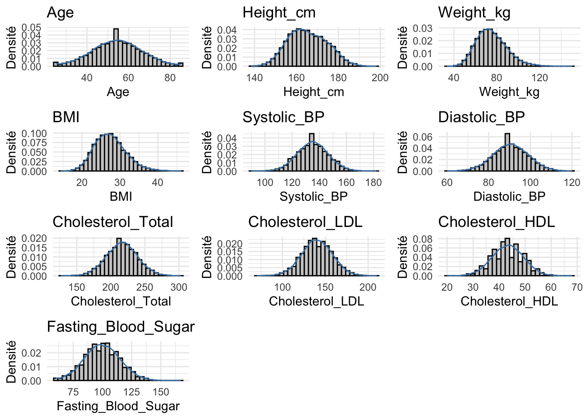
Transformation logarithmique des variables asymétriques (Weight_kg, BMI, Height_cm).
vars_to_log <- c("Weight_kg", "BMI", "Height_cm")
for (v in vars_to_log) {
# Only proceed if the original column exists in the dataframe
if (v %in% names(data_raw)) {
data_raw[[paste0("Log", v)]] <- log(data_raw[[v]])
data_raw[[v]] <- NULL
message(paste("Successfully transformed", v))
} else {
message(paste("Variable", v, "not found. It might have already been transformed."))
}
}
plot_quantitative(data_raw)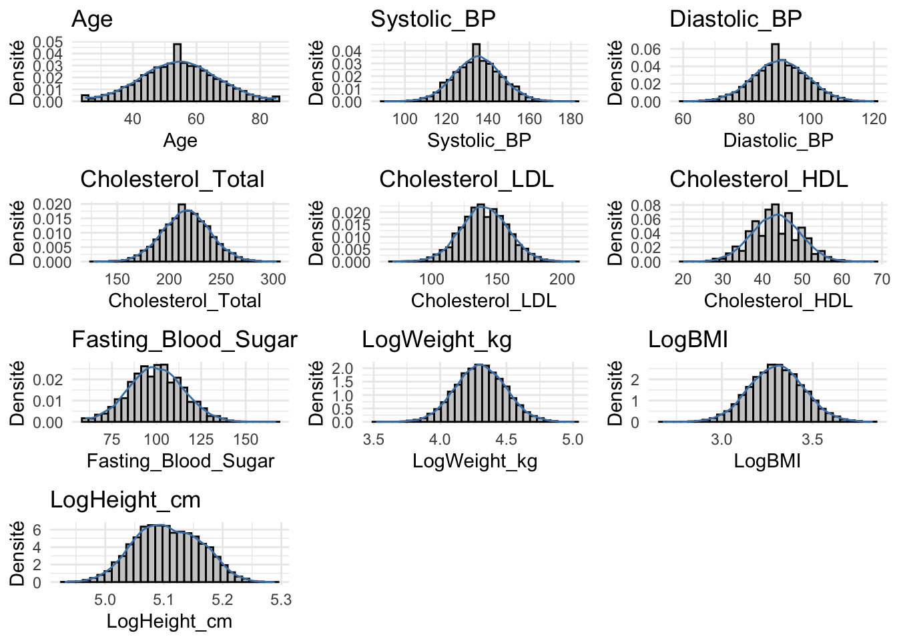
# Variables quantitatives explicatives communes
quanti_cols <- c("Age", "LogHeight_cm", "LogWeight_kg", "LogBMI",
"Systolic_BP", "Diastolic_BP",
"Cholesterol_Total", "Cholesterol_LDL",
"Cholesterol_HDL", "Fasting_Blood_Sugar")
# Variables qualitatives (hors cibles)
quali_cols_base <- c("Gender", "Smoking_Status", "Alcohol_Consumption",
"Physical_Activity_Level", "Family_History",
"Stress_Level", "Sleep_Hours")PARTIE 1 — Classification : Risque de Maladie Cardiaque
Objectif : prédire
Heart_Disease_Risk(variable binaire) → problème de classification.
# On travaille sur une copie avec Heart_Disease_Risk comme cible
data_classif <- data_raw2. Analyse Exploratoire — Classification
2.1 Analyse bidimensionnelle
Visuellement, le statut fumeur, l’activité physique, les antécédents familiaux et le stress semblent influencer le risque cardiaque.
quanti_cols_plot <- c("Age", "Systolic_BP", "Diastolic_BP",
"Cholesterol_Total", "Cholesterol_LDL",
"Cholesterol_HDL", "Fasting_Blood_Sugar")
data_long <- data_classif %>%
select(all_of(c("Heart_Disease_Risk", quanti_cols_plot))) %>%
pivot_longer(cols = all_of(quanti_cols_plot),
names_to = "Variable", values_to = "Valeur")
ggplot(data_long, aes(x = Variable, y = Valeur, fill = Heart_Disease_Risk)) +
geom_boxplot(position = position_dodge(width = 0.8)) +
scale_fill_manual(values = c("0" = "lightblue", "1" = "salmon"),
labels = c("Non", "Oui")) +
labs(x = "Variable", y = "Valeur", fill = "Risque cardiaque",
title = "Distribution des variables quantitatives selon le risque cardiaque") +
theme_minimal() +
theme(axis.text.x = element_text(angle = 45, hjust = 1))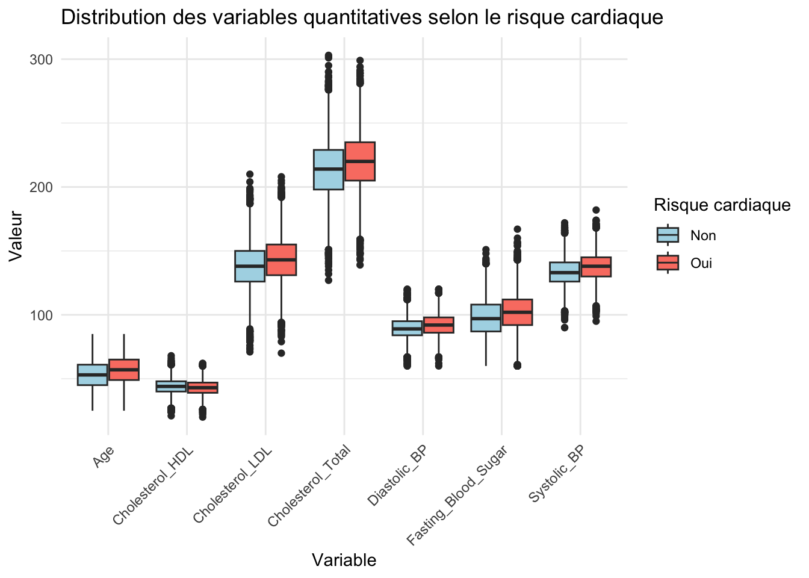
for (col in c(quali_cols_base, "Heart_Disease_Risk")) {
if (col == "Heart_Disease_Risk") next
p <- ggplot(data_classif, aes_string(x = col, fill = "Heart_Disease_Risk")) +
geom_bar(position = "fill") +
scale_fill_manual(values = c("0" = "lightblue", "1" = "salmon"),
labels = c("Non", "Oui")) +
ylab("Proportion") +
labs(fill = "Risque cardiaque",
title = paste("Proportion de risque cardiaque par", col)) +
theme_minimal()
print(p)
}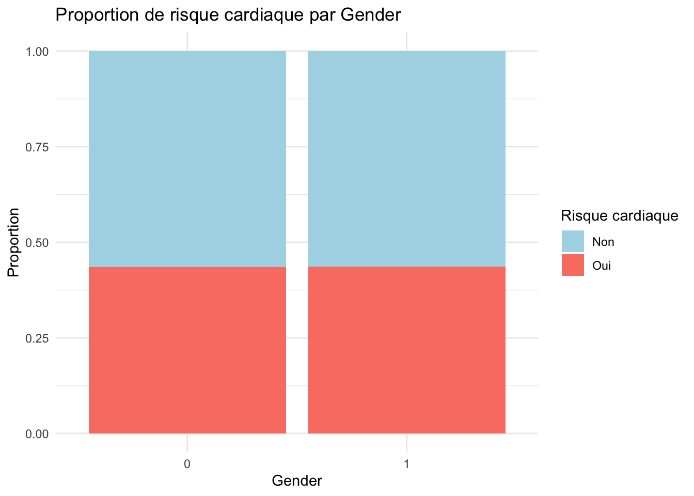
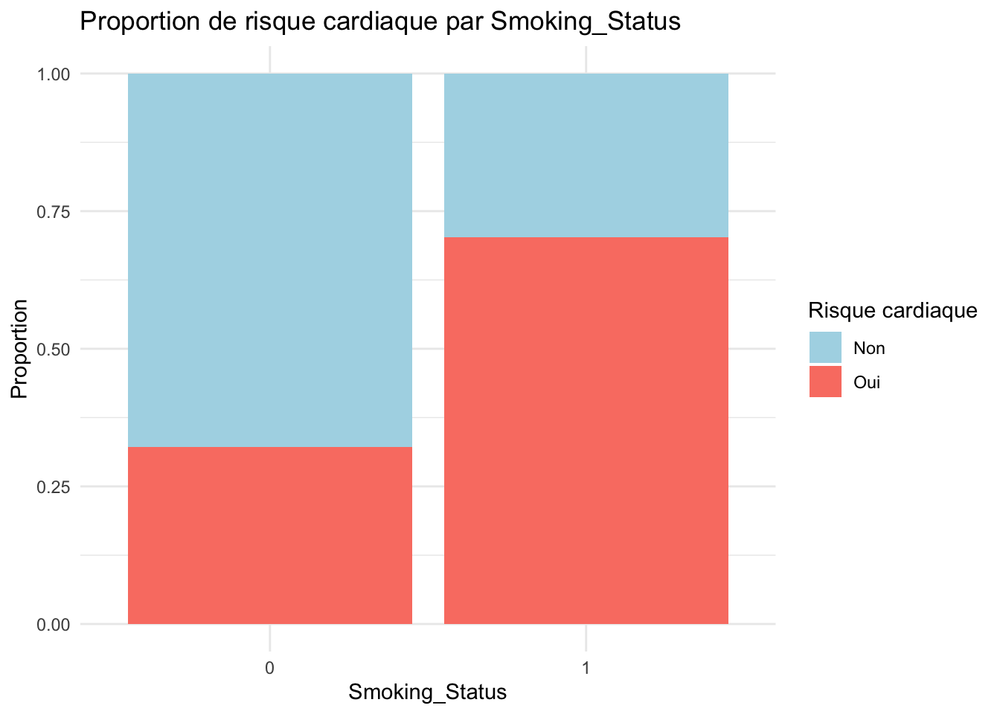
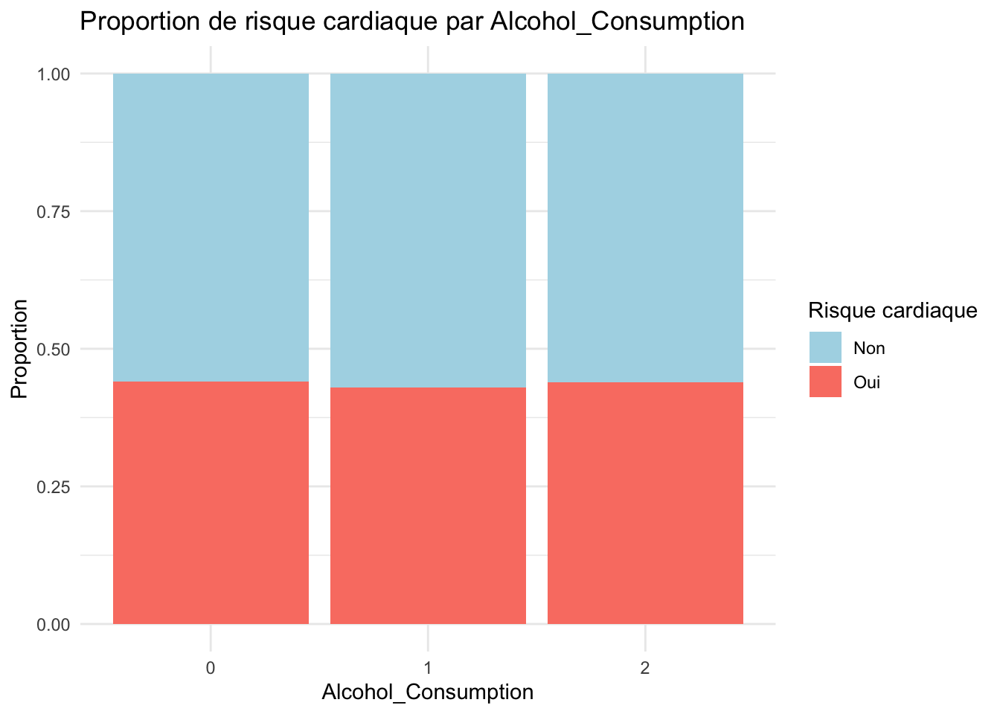
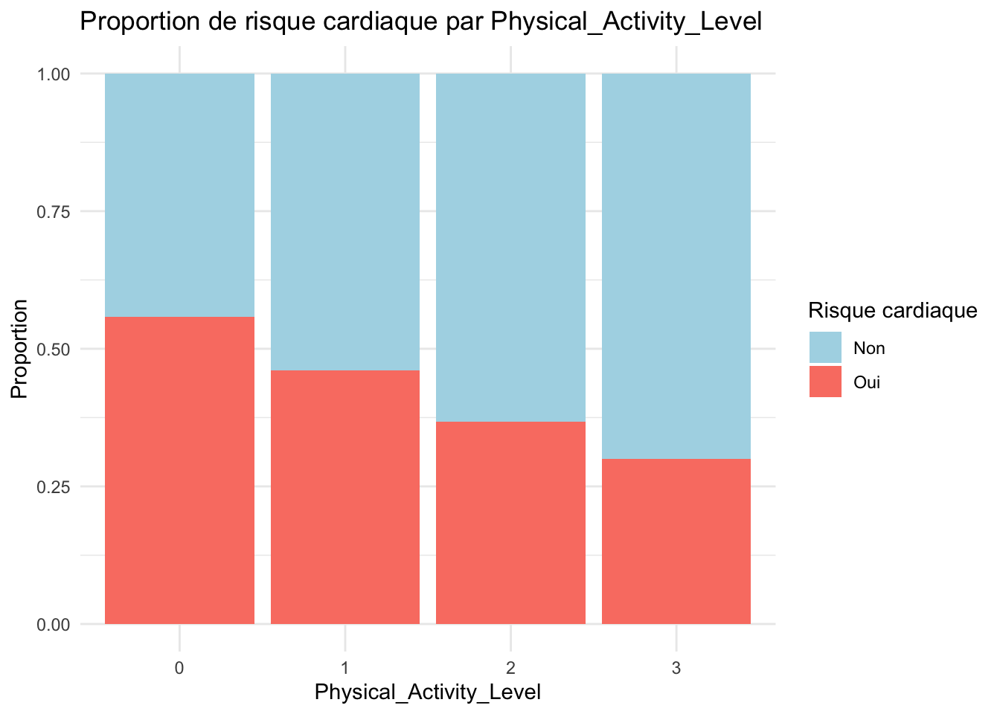
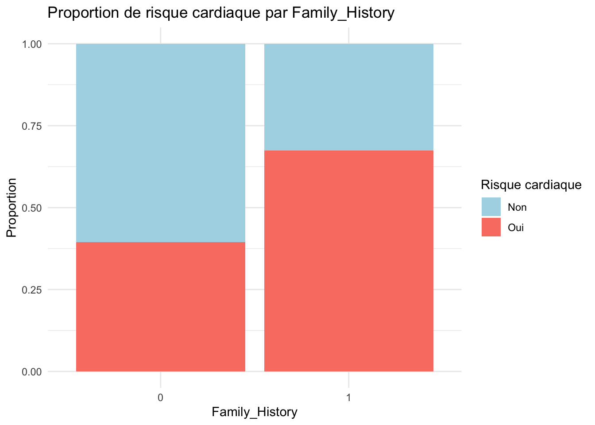
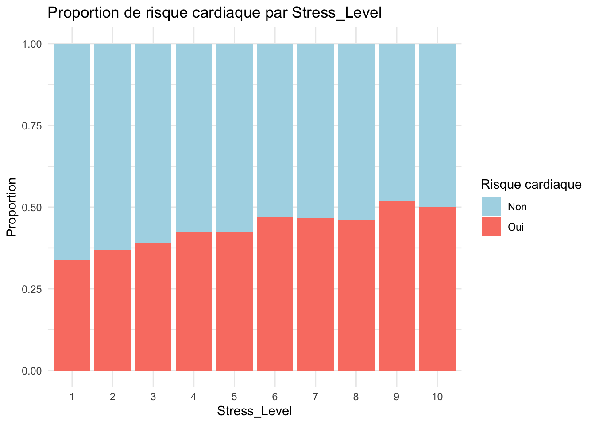
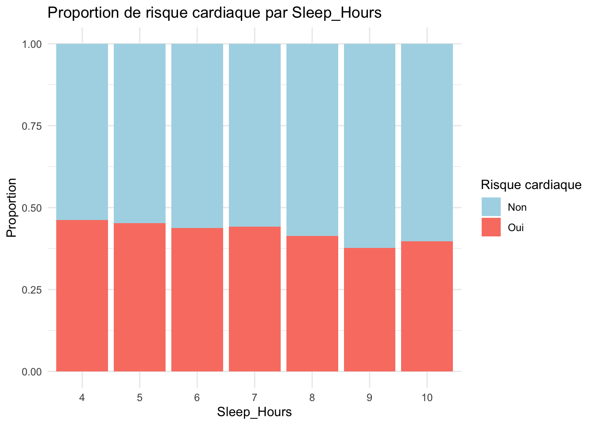
vars_num <- names(data_classif)[sapply(data_classif, is.numeric)]
corrplot(cor(data_classif[, vars_num]), method = "ellipse",
title = "Matrice de corrélations", mar = c(0, 0, 1, 0))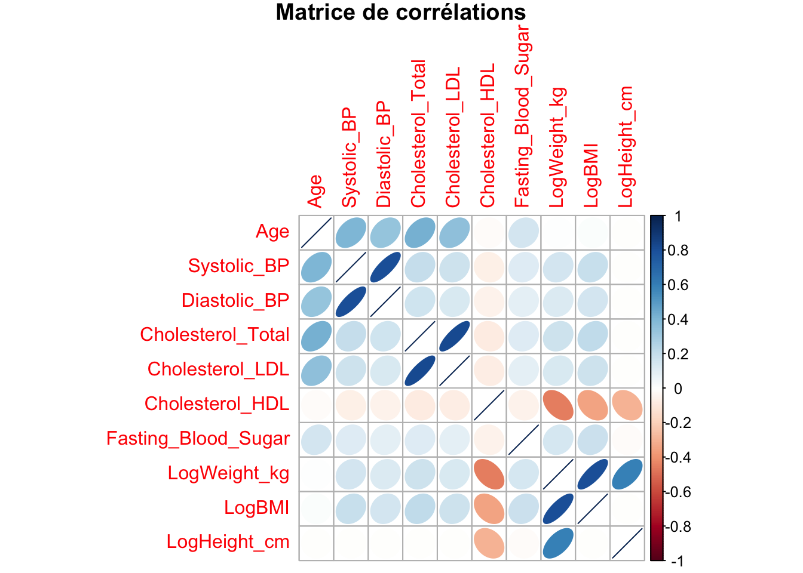
2.2 ACP
quali_all_classif <- c(quali_cols_base, "Heart_Disease_Risk")
n_quanti <- length(quanti_cols)
acp_classif <- PCA(data_classif[, c(quanti_cols, quali_all_classif)],
scale.unit = TRUE, graph = FALSE,
quali.sup = (n_quanti + 1):(n_quanti + length(quali_all_classif)),
ncp = 7)
g1 <- fviz_eig(acp_classif, addlabels = TRUE, ylim = c(0, 40))
g2 <- ggplot(melt(acp_classif$ind$coord), aes(x = Var2, y = value)) +
geom_boxplot() + xlab("")
grid.arrange(g1, g2, ncol = 2)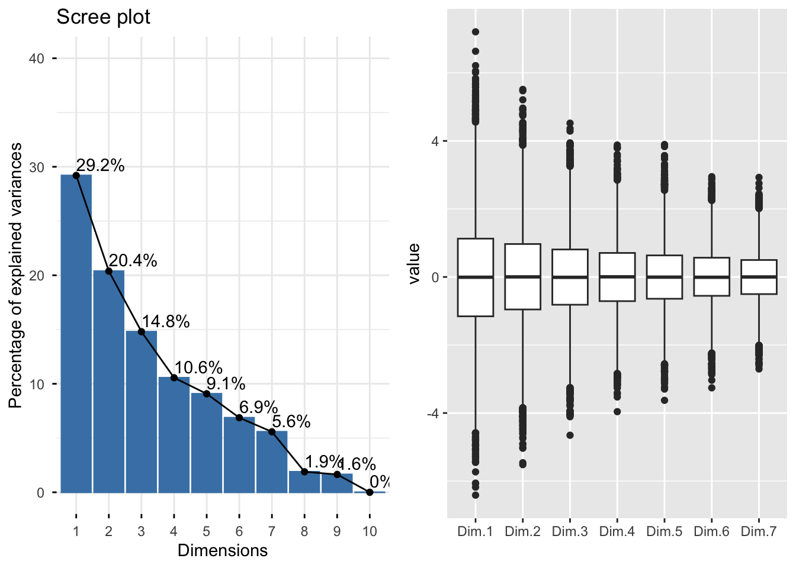
corrplot(acp_classif$var$cor, is.corr = FALSE, method = "ellipse",
title = "Corrélations variables / composantes", mar = c(0, 0, 1, 0))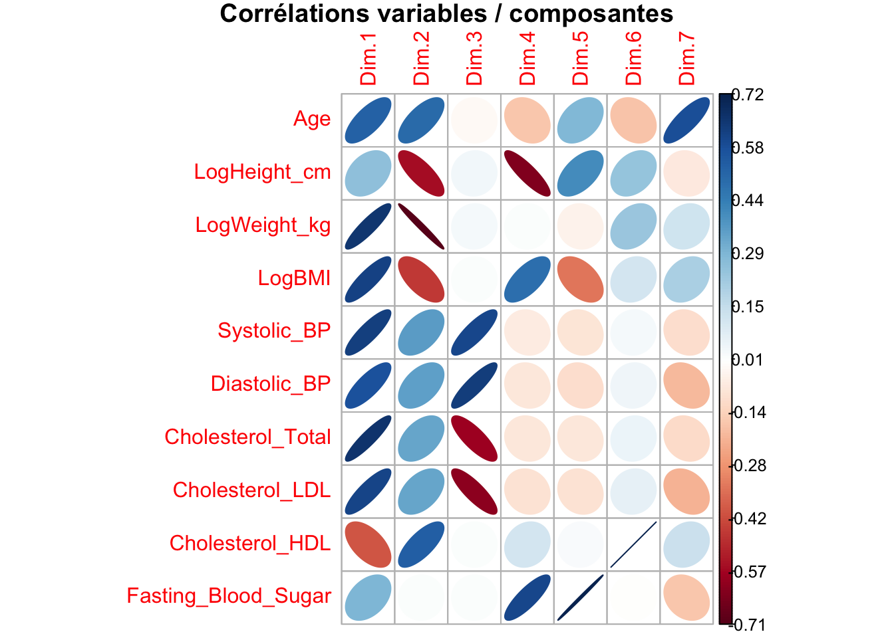
fviz_pca_var(acp_classif, axes = c(1, 2), repel = TRUE)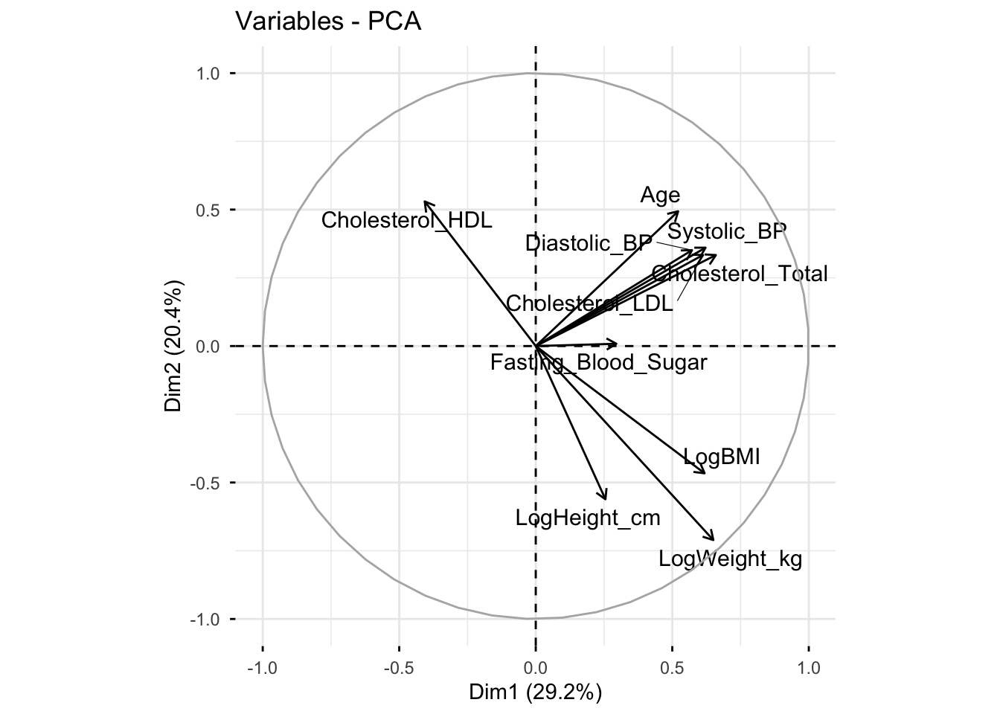
fviz_pca_ind(acp_classif, col.ind = "contrib", label = "none",
gradient.cols = c("white", "#2E9FDF", "#FC4E07"), repel = TRUE)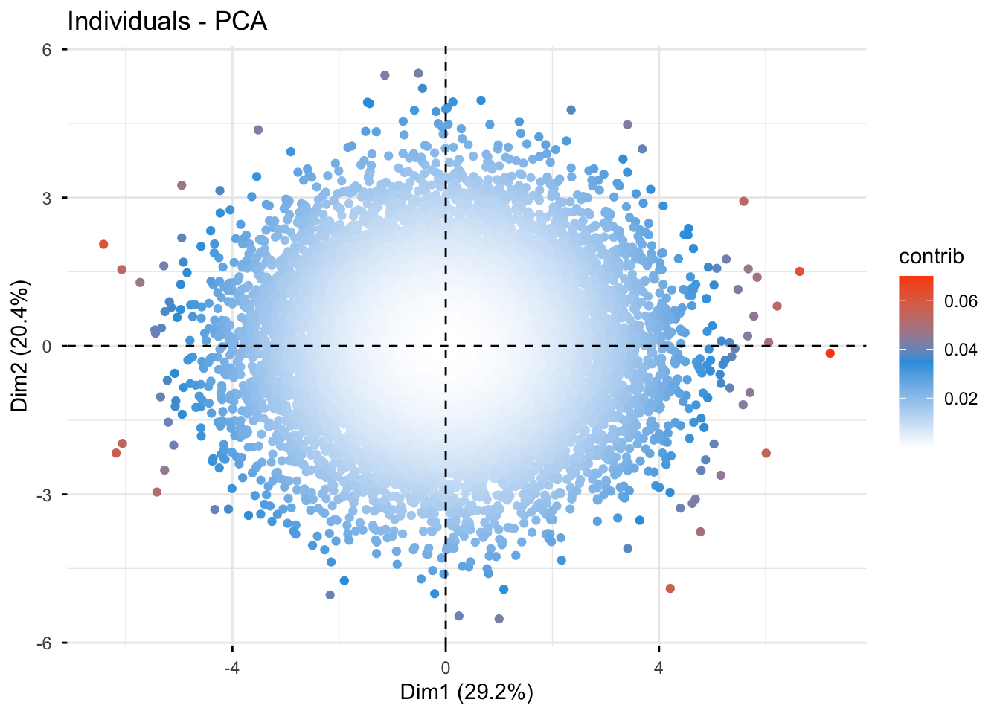
3. Modélisation — Classification
3.1 Partition et prétraitement
set.seed(42)
trainIndex_C <- createDataPartition(data_classif$Heart_Disease_Risk,
times = 1, p = 0.8, list = FALSE)
trainData_C <- data_classif[ trainIndex_C, ]
testData_C <- data_classif[-trainIndex_C, ]
params_C <- preProcess(trainData_C, method = c("center", "scale"))
TrainC <- predict(params_C, trainData_C)[, -1]
TestC <- predict(params_C, testData_C)[, -1]
# Niveaux valides pour caret
levels(TrainC$Heart_Disease_Risk) <- make.names(levels(TrainC$Heart_Disease_Risk))
levels(TestC$Heart_Disease_Risk) <- make.names(levels(TestC$Heart_Disease_Risk))
cat("Train:", nrow(TrainC), "| Test:", nrow(TestC), "\n")Train: 12000 | Test: 3000 3.2 Régression logistique
Modèle complet
reg.logit <- glm(Heart_Disease_Risk ~ ., data = TrainC, family = "binomial")
summary(reg.logit)
Call:
glm(formula = Heart_Disease_Risk ~ ., family = "binomial", data = TrainC)
Coefficients:
Estimate Std. Error z value Pr(>|z|)
(Intercept) -0.804350 0.132602 -6.066 1.31e-09 ***
Age 0.241517 0.026496 9.115 < 2e-16 ***
Gender1 -0.014681 0.064863 -0.226 0.82093
Systolic_BP 0.340587 0.038882 8.759 < 2e-16 ***
Diastolic_BP -0.002309 0.037140 -0.062 0.95042
Cholesterol_Total -0.042721 0.040708 -1.049 0.29397
Cholesterol_LDL 0.212242 0.039010 5.441 5.31e-08 ***
Cholesterol_HDL -0.052074 0.025950 -2.007 0.04478 *
Fasting_Blood_Sugar 0.315742 0.022803 13.846 < 2e-16 ***
Smoking_Status1 1.985221 0.050241 39.514 < 2e-16 ***
Alcohol_Consumption1 -0.089060 0.046378 -1.920 0.05482 .
Alcohol_Consumption2 -0.044195 0.074238 -0.595 0.55163
Physical_Activity_Level1 -0.574406 0.058797 -9.769 < 2e-16 ***
Physical_Activity_Level2 -1.066321 0.063537 -16.783 < 2e-16 ***
Physical_Activity_Level3 -1.550474 0.087919 -17.635 < 2e-16 ***
Family_History1 1.480728 0.062789 23.583 < 2e-16 ***
Stress_Level2 0.186278 0.100993 1.844 0.06512 .
Stress_Level3 0.253687 0.100183 2.532 0.01133 *
Stress_Level4 0.405353 0.099322 4.081 4.48e-05 ***
Stress_Level5 0.459875 0.099546 4.620 3.84e-06 ***
Stress_Level6 0.702384 0.098830 7.107 1.19e-12 ***
Stress_Level7 0.699715 0.098877 7.077 1.48e-12 ***
Stress_Level8 0.725979 0.099437 7.301 2.86e-13 ***
Stress_Level9 0.979639 0.100097 9.787 < 2e-16 ***
Stress_Level10 0.949853 0.098405 9.652 < 2e-16 ***
Sleep_Hours5 0.030200 0.111779 0.270 0.78702
Sleep_Hours6 -0.070084 0.104743 -0.669 0.50343
Sleep_Hours7 -0.155770 0.104720 -1.487 0.13688
Sleep_Hours8 -0.209867 0.111513 -1.882 0.05984 .
Sleep_Hours9 -0.474639 0.151370 -3.136 0.00171 **
Sleep_Hours10 -0.289901 0.283074 -1.024 0.30578
LogWeight_kg -5.252078 3.351291 -1.567 0.11707
LogBMI 4.407159 2.704433 1.630 0.10318
LogHeight_cm 3.121821 1.992749 1.567 0.11721
---
Signif. codes: 0 '***' 0.001 '**' 0.01 '*' 0.05 '.' 0.1 ' ' 1
(Dispersion parameter for binomial family taken to be 1)
Null deviance: 16438 on 11999 degrees of freedom
Residual deviance: 12652 on 11966 degrees of freedom
AIC: 12720
Number of Fisher Scoring iterations: 4par(mfrow = c(2, 2)); plot(reg.logit); par(mfrow = c(1, 1))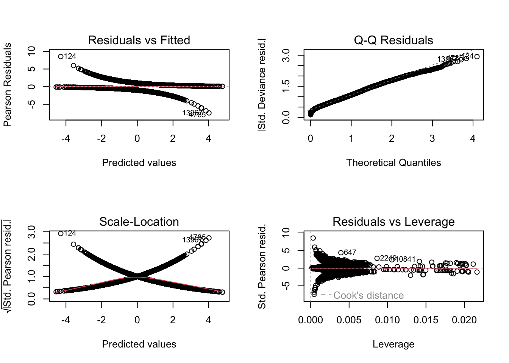
pred.log <- predict(reg.logit, newdata = TestC, type = "response")
pred.log.class <- ifelse(pred.log > 0.5, "X1", "X0")
table(Prédiction = pred.log.class, Réel = TestC$Heart_Disease_Risk) Réel
Prédiction X0 X1
X0 1374 480
X1 318 828Sélection BIC
Les variables retenues sont : pression, âge, cholestérol LDL, sucre dans le sang, statut fumeur, stress, activité physique, antécédents familiaux et IMC.
n_C <- nrow(TrainC)
model_bic <- step(reg.logit, direction = "backward", k = log(n_C), trace = 0)
summary(model_bic)
Call:
glm(formula = Heart_Disease_Risk ~ Age + Systolic_BP + Cholesterol_LDL +
Fasting_Blood_Sugar + Smoking_Status + Physical_Activity_Level +
Family_History + Stress_Level + LogBMI, family = "binomial",
data = TrainC)
Coefficients:
Estimate Std. Error z value Pr(>|z|)
(Intercept) -0.96054 0.08475 -11.333 < 2e-16 ***
Age 0.23347 0.02564 9.106 < 2e-16 ***
Systolic_BP 0.33666 0.02471 13.622 < 2e-16 ***
Cholesterol_LDL 0.18181 0.02376 7.653 1.97e-14 ***
Fasting_Blood_Sugar 0.31283 0.02276 13.747 < 2e-16 ***
Smoking_Status1 1.97566 0.05008 39.448 < 2e-16 ***
Physical_Activity_Level1 -0.57541 0.05862 -9.816 < 2e-16 ***
Physical_Activity_Level2 -1.06476 0.06337 -16.802 < 2e-16 ***
Physical_Activity_Level3 -1.54339 0.08758 -17.622 < 2e-16 ***
Family_History1 1.47634 0.06258 23.591 < 2e-16 ***
Stress_Level2 0.18223 0.10076 1.809 0.0705 .
Stress_Level3 0.25494 0.09994 2.551 0.0107 *
Stress_Level4 0.40271 0.09913 4.062 4.86e-05 ***
Stress_Level5 0.45797 0.09932 4.611 4.00e-06 ***
Stress_Level6 0.69616 0.09853 7.065 1.60e-12 ***
Stress_Level7 0.69969 0.09856 7.099 1.26e-12 ***
Stress_Level8 0.71591 0.09911 7.223 5.08e-13 ***
Stress_Level9 0.97696 0.09980 9.789 < 2e-16 ***
Stress_Level10 0.95083 0.09815 9.687 < 2e-16 ***
LogBMI 0.18342 0.02307 7.951 1.85e-15 ***
---
Signif. codes: 0 '***' 0.001 '**' 0.01 '*' 0.05 '.' 0.1 ' ' 1
(Dispersion parameter for binomial family taken to be 1)
Null deviance: 16438 on 11999 degrees of freedom
Residual deviance: 12687 on 11980 degrees of freedom
AIC: 12727
Number of Fisher Scoring iterations: 4pred.log.bic <- predict(model_bic, newdata = TestC, type = "response")
pred.BIC.class <- ifelse(pred.log.bic > 0.5, "X1", "X0")
table(Prédiction = pred.BIC.class, Réel = TestC$Heart_Disease_Risk) Réel
Prédiction X0 X1
X0 1369 473
X1 323 835# Légèrement moins bon que le modèle complet# Préparation des objets ROCR pour la comparaison finale
pred_rocr_logit <- prediction(pred.log, TestC$Heart_Disease_Risk)
pred_rocr_bic <- prediction(pred.log.bic, TestC$Heart_Disease_Risk)
perflogit <- performance(pred_rocr_logit, "tpr", "fpr")
perfBIC <- performance(pred_rocr_bic, "tpr", "fpr")3.3 Lasso (classification)
x.mat_C <- model.matrix(Heart_Disease_Risk ~ . - 1, data = TrainC)
y.vec_C <- as.numeric(as.character(TrainC$Heart_Disease_Risk)) # 0/1
# Convert "X0"/"X1" back to 0/1 for glmnet
y.vec_C <- ifelse(TrainC$Heart_Disease_Risk == "X1", 1, 0)
reg.lasso_C <- glmnet(x = x.mat_C, y = y.vec_C, family = "binomial")
reg.lasso_C.cv <- cv.glmnet(x = x.mat_C, y = y.vec_C, family = "binomial", nfolds = 10)
autoplot(reg.lasso_C.cv)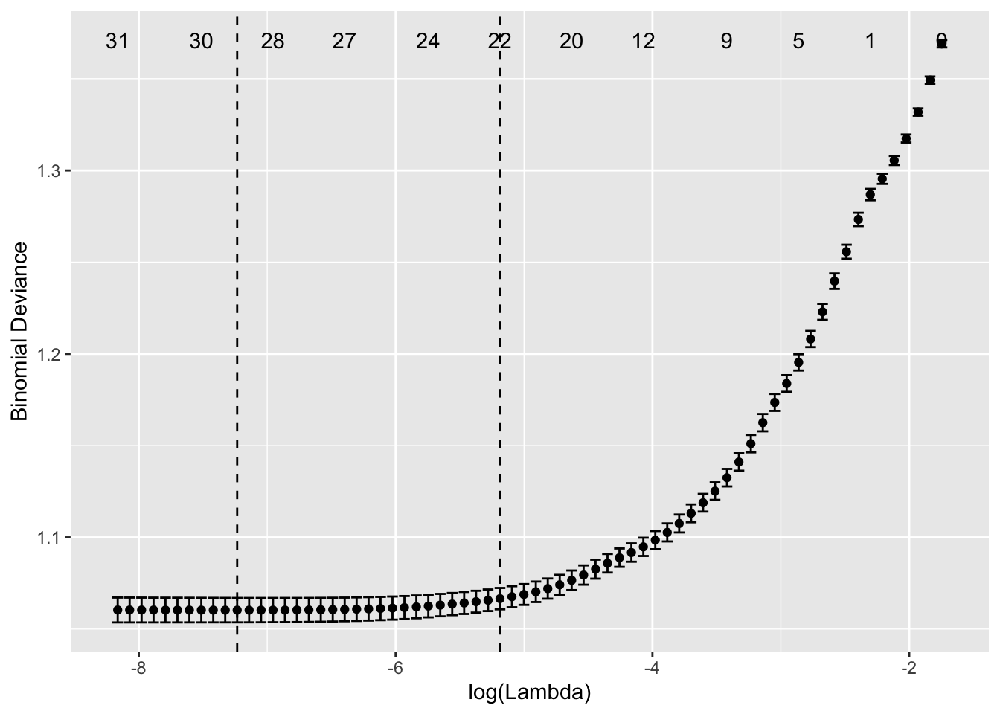
cat("lambda.1se :", round(reg.lasso_C.cv$lambda.1se, 6), "\n")lambda.1se : 0.005588 coef(reg.lasso_C.cv, s = "lambda.1se")35 x 1 sparse Matrix of class "dgCMatrix"
lambda.1se
(Intercept) -0.69416354
Age 0.20519724
Gender0 .
Gender1 .
Systolic_BP 0.30803302
Diastolic_BP .
Cholesterol_Total .
Cholesterol_LDL 0.15586513
Cholesterol_HDL -0.02356548
Fasting_Blood_Sugar 0.27690547
Smoking_Status1 1.81908067
Alcohol_Consumption1 -0.01871639
Alcohol_Consumption2 .
Physical_Activity_Level1 -0.33101934
Physical_Activity_Level2 -0.79010113
Physical_Activity_Level3 -1.18677955
Family_History1 1.32048001
Stress_Level2 -0.10501747
Stress_Level3 -0.03325678
Stress_Level4 .
Stress_Level5 .
Stress_Level6 0.20782744
Stress_Level7 0.21116571
Stress_Level8 0.22556066
Stress_Level9 0.47599470
Stress_Level10 0.44695791
Sleep_Hours5 0.06224310
Sleep_Hours6 .
Sleep_Hours7 .
Sleep_Hours8 -0.02163799
Sleep_Hours9 -0.18928107
Sleep_Hours10 .
LogWeight_kg .
LogBMI 0.14481841
LogHeight_cm . x.test_C <- model.matrix(Heart_Disease_Risk ~ . - 1, data = TestC)
pred.lasso_C <- predict(reg.lasso_C.cv, newx = x.test_C, s = "lambda.min", type = "response")
pred.classlasso <- ifelse(pred.lasso_C > 0.5, "X1", "X0")
table(Prédiction = pred.classlasso, Réel = TestC$Heart_Disease_Risk) Réel
Prédiction X0 X1
X0 1374 478
X1 318 830# Meilleur modèle, mais de très peu
pred_rocr_lasso <- prediction(as.vector(pred.lasso_C), TestC$Heart_Disease_Risk)
perfLasso <- performance(pred_rocr_lasso, "tpr", "fpr")3.4 Arbre CART (classification)
Élagage par Xerror
L’arbre confirme que le statut fumeur et les antécédents familiaux sont les variables les plus importantes.
tree.reg_C <- rpart(Heart_Disease_Risk ~ ., data = TrainC,
method = "class", parms = list(split = "information"),
control = rpart.control(cp = 0.0001))
printcp(tree.reg_C)
Classification tree:
rpart(formula = Heart_Disease_Risk ~ ., data = TrainC, method = "class",
parms = list(split = "information"), control = rpart.control(cp = 1e-04))
Variables actually used in tree construction:
[1] Age Alcohol_Consumption Cholesterol_HDL
[4] Cholesterol_LDL Cholesterol_Total Diastolic_BP
[7] Family_History Fasting_Blood_Sugar Gender
[10] LogBMI LogHeight_cm LogWeight_kg
[13] Physical_Activity_Level Sleep_Hours Smoking_Status
[16] Stress_Level Systolic_BP
Root node error: 5232/12000 = 0.436
n= 12000
CP nsplit rel error xerror xstd
1 0.27905199 0 1.00000 1.00000 0.0103826
2 0.03325688 1 0.72095 0.72095 0.0097202
3 0.01242355 2 0.68769 0.68769 0.0095932
4 0.00372706 3 0.67527 0.68521 0.0095833
5 0.00356779 8 0.65195 0.67737 0.0095515
6 0.00305810 11 0.64125 0.66724 0.0095095
7 0.00210245 14 0.63207 0.66571 0.0095030
8 0.00191131 16 0.62787 0.66399 0.0094957
9 0.00181575 23 0.61353 0.66227 0.0094884
10 0.00165647 26 0.60780 0.66131 0.0094844
11 0.00152905 29 0.60283 0.66284 0.0094909
12 0.00143349 30 0.60130 0.66151 0.0094852
13 0.00133792 33 0.59671 0.66112 0.0094836
14 0.00114679 41 0.58448 0.66112 0.0094836
15 0.00108308 44 0.58104 0.66284 0.0094909
16 0.00105122 52 0.57206 0.66284 0.0094909
17 0.00095566 59 0.56460 0.66017 0.0094795
18 0.00086009 68 0.55600 0.66131 0.0094844
19 0.00082824 70 0.55428 0.66189 0.0094868
20 0.00076453 73 0.55180 0.66189 0.0094868
21 0.00071674 80 0.54644 0.66399 0.0094957
22 0.00070082 84 0.54358 0.66399 0.0094957
23 0.00066896 94 0.53479 0.66667 0.0095070
24 0.00063710 105 0.52714 0.66800 0.0095127
25 0.00057339 108 0.52523 0.67833 0.0095554
26 0.00053517 140 0.50669 0.68043 0.0095640
27 0.00047783 164 0.49044 0.68712 0.0095909
28 0.00044597 200 0.47190 0.68941 0.0096000
29 0.00038226 233 0.45566 0.69916 0.0096383
30 0.00033448 302 0.42336 0.70317 0.0096537
31 0.00031855 316 0.41781 0.70986 0.0096791
32 0.00030581 319 0.41686 0.72190 0.0097237
33 0.00028670 332 0.41170 0.72420 0.0097320
34 0.00025484 380 0.39450 0.73203 0.0097601
35 0.00023891 401 0.38895 0.73719 0.0097782
36 0.00022936 415 0.38494 0.73719 0.0097782
37 0.00019113 432 0.38016 0.75325 0.0098330
38 0.00015291 476 0.36984 0.75573 0.0098412
39 0.00014335 481 0.36907 0.76166 0.0098607
40 0.00013379 504 0.36506 0.76567 0.0098737
41 0.00012742 514 0.36372 0.76625 0.0098755
42 0.00011468 531 0.36086 0.76835 0.0098823
43 0.00010000 541 0.35971 0.77007 0.0098877plotcp(tree.reg_C)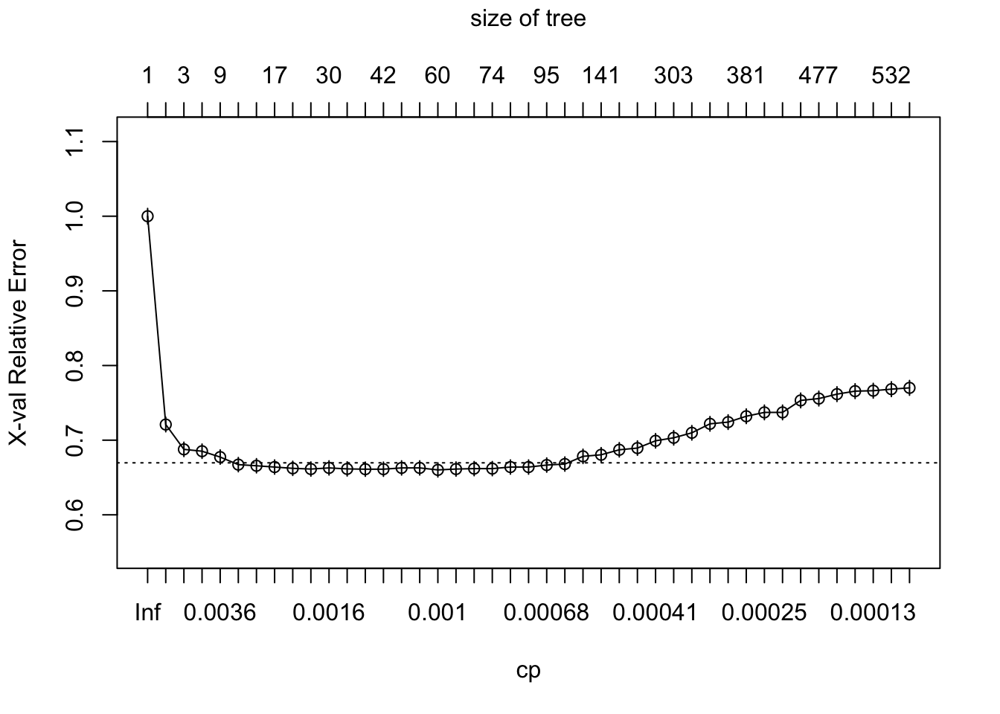
best_cp_C <- tree.reg_C$cptable[which.min(tree.reg_C$cptable[, "xerror"]), "CP"]
tree.pruned_C <- prune(tree.reg_C, cp = best_cp_C)
plot(as.party(tree.pruned_C), type = "simple", gp = gpar(fontsize = 5))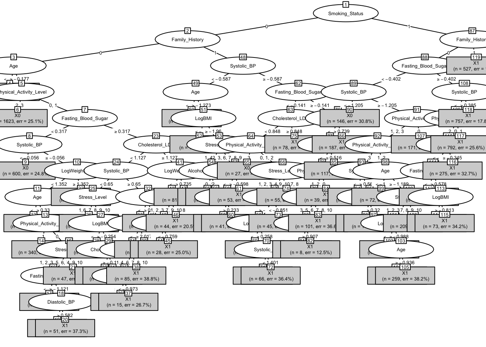
pred_tree_class <- predict(tree.pruned_C, newdata = TestC, type = "class")
table(Prédit = pred_tree_class, Réel = TestC$Heart_Disease_Risk) Réel
Prédit X0 X1
X0 1368 516
X1 324 792# Beaucoup plus de faux négatifs — problématique en contexte médical
pred_tree_prob <- predict(tree.pruned_C, newdata = TestC, type = "prob")[, 2]
pred_rocr_tree <- prediction(pred_tree_prob, TestC$Heart_Disease_Risk)
perfTree <- performance(pred_rocr_tree, "tpr", "fpr")Optimisation par CV (caret)
cv_ctrl_C <- trainControl(method = "cv", number = 20,
classProbs = TRUE, summaryFunction = twoClassSummary)
tree.cv_C <- train(Heart_Disease_Risk ~ ., data = TrainC,
method = "rpart", metric = "ROC",
trControl = cv_ctrl_C,
tuneGrid = expand.grid(cp = seq(0.0001, 0.05, by = 0.001)))
plot(tree.cv_C, main = "Sélection du cp par CV (AUC)")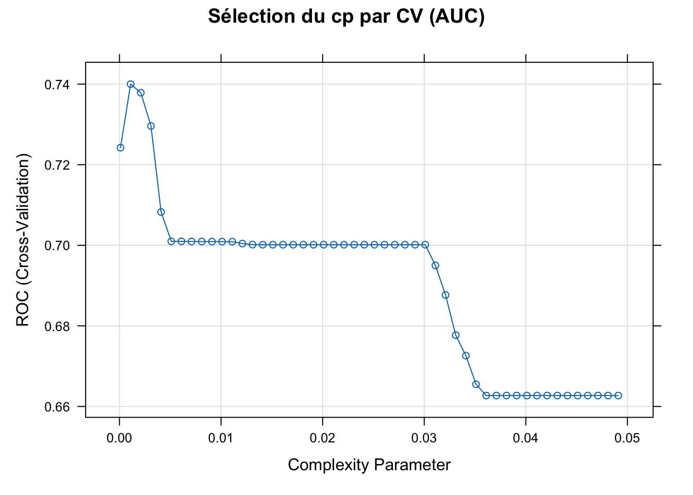
best_cp_cv_C <- tree.cv_C$bestTune$cp
cat("cp optimal (CV) :", best_cp_cv_C, "\n")cp optimal (CV) : 0.0011 tree.pruned_cv_C <- prune(tree.reg_C, cp = best_cp_cv_C)
plot(as.party(tree.pruned_cv_C), type = "simple", gp = gpar(fontsize = 5))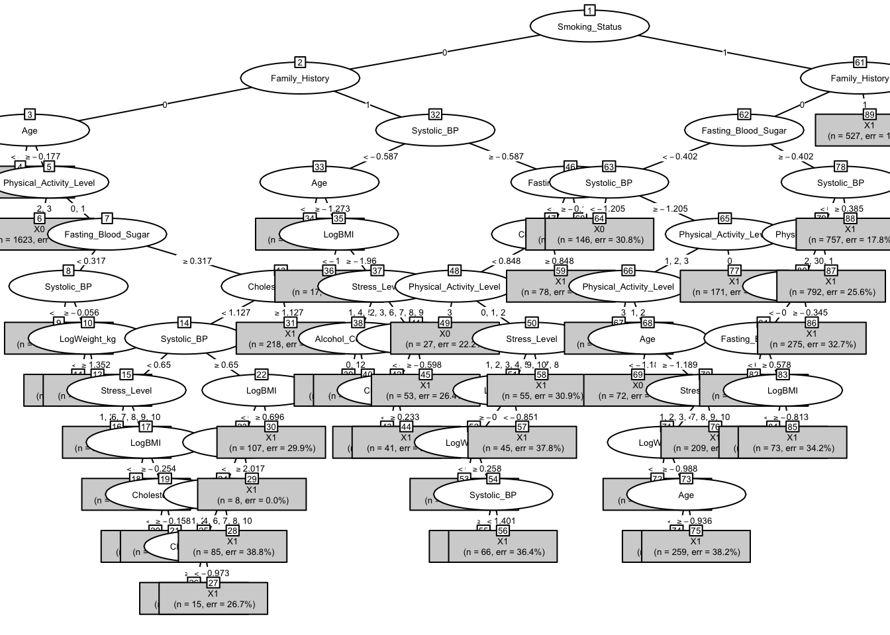
pred_tree_C_class <- predict(tree.pruned_cv_C, newdata = TestC, type = "class")
table(Prédit = pred_tree_C_class, Réel = TestC$Heart_Disease_Risk) Réel
Prédit X0 X1
X0 1368 503
X1 324 805# Encore plus de faux négatifs
pred_tree_C_prob <- predict(tree.pruned_cv_C, newdata = TestC, type = "prob")[, 2]
pred_rocr_tree_C <- prediction(pred_tree_C_prob, TestC$Heart_Disease_Risk)
perfTree_C <- performance(pred_rocr_tree_C, "tpr", "fpr")importance_C <- tree.pruned_cv_C$variable.importance
if (!is.null(importance_C)) {
imp_df_C <- data.frame(Variable = names(importance_C),
Importance = as.numeric(importance_C)) %>%
arrange(desc(Importance))
ggplot(imp_df_C, aes(x = reorder(Variable, Importance), y = Importance)) +
geom_col(fill = "steelblue") + coord_flip() +
labs(title = "Importance des variables — CART (classification)",
x = "Variable", y = "Importance") + theme_minimal()
}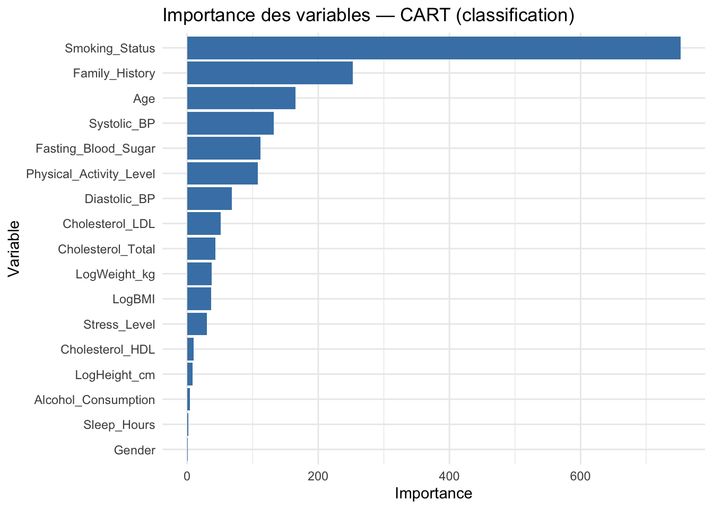
3.5 Random Forest (classification)
rf.mod_C <- randomForest(Heart_Disease_Risk ~ ., data = TrainC,
ntree = 500, importance = TRUE)
cat("mtry utilisé :", rf.mod_C$mtry, "\n")mtry utilisé : 4 plot(rf.mod_C, main = "Convergence de l'erreur OOB")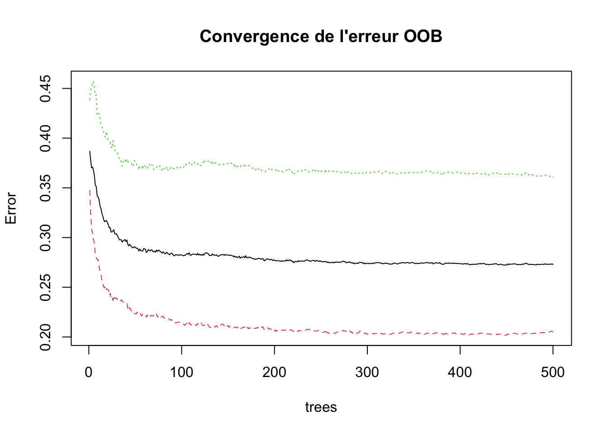
importance_rf_C <- as.data.frame(importance(rf.mod_C))
importance_rf_C$Variable <- rownames(importance_rf_C)
ggplot(importance_rf_C, aes(x = reorder(Variable, MeanDecreaseAccuracy),
y = MeanDecreaseAccuracy)) +
geom_col(fill = "darkgreen") + coord_flip() +
labs(title = "Importance des variables (Random Forest — classification)",
x = "Variable", y = "MeanDecreaseAccuracy") + theme_minimal()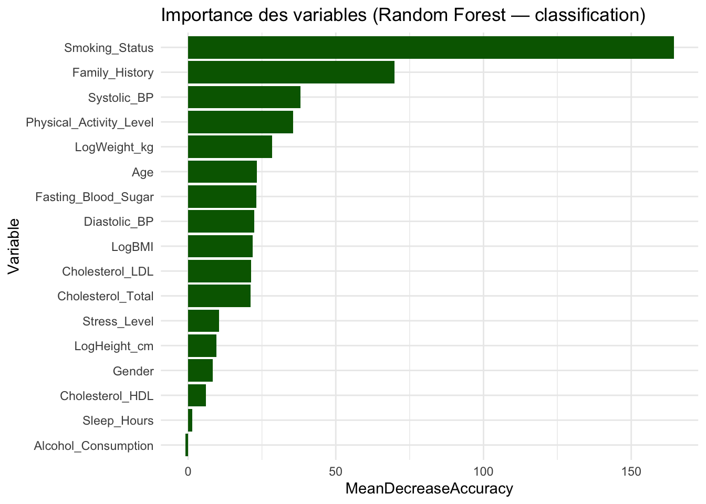
pred.rf_C <- predict(rf.mod_C, newdata = TestC)
confusionMatrix(pred.rf_C, TestC$Heart_Disease_Risk)Confusion Matrix and Statistics
Reference
Prediction X0 X1
X0 1367 475
X1 325 833
Accuracy : 0.7333
95% CI : (0.7171, 0.7491)
No Information Rate : 0.564
P-Value [Acc > NIR] : < 2.2e-16
Kappa : 0.4506
Mcnemar's Test P-Value : 1.38e-07
Sensitivity : 0.8079
Specificity : 0.6369
Pos Pred Value : 0.7421
Neg Pred Value : 0.7193
Prevalence : 0.5640
Detection Rate : 0.4557
Detection Prevalence : 0.6140
Balanced Accuracy : 0.7224
'Positive' Class : X0
pred.rf_C_prob <- predict(rf.mod_C, newdata = TestC, type = "prob")[, 2]
pred_rocr_rf_C <- prediction(pred.rf_C_prob, TestC$Heart_Disease_Risk)
perfRF_C <- performance(pred_rocr_rf_C, "tpr", "fpr")
# Le poids remonte un peu aussi, mais les mêmes variables dominent3.6 SVM (classification)
Noyau RBF
cl <- makePSOCKcluster(detectCores() - 1)
registerDoParallel(cl)
ctrl_svm <- trainControl(method = "cv", number = 5,
allowParallel = TRUE, classProbs = TRUE)
grid_svm <- expand.grid(sigma = c(0.01, 0.02, 0.05),
C = c(0.01, 0.1, 0.5, 1, 1.5))
svm.caret <- train(Heart_Disease_Risk ~ ., data = TrainC,
method = "svmRadial", trControl = ctrl_svm,
tuneGrid = grid_svm, preProcess = c("center", "scale"))
stopCluster(cl); registerDoSEQ()
plot(svm.caret)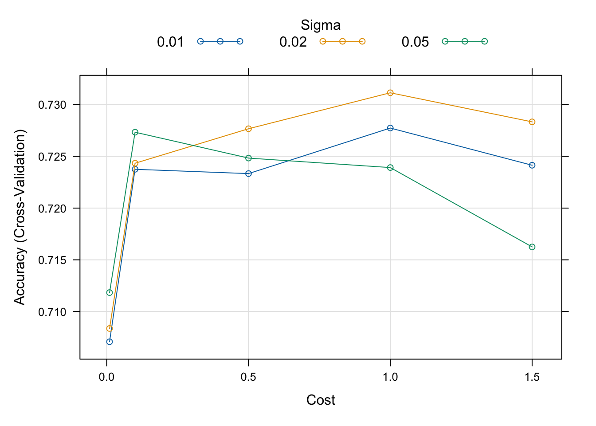
pred.svm <- predict(svm.caret, newdata = TestC)
confusionMatrix(pred.svm, TestC$Heart_Disease_Risk)Confusion Matrix and Statistics
Reference
Prediction X0 X1
X0 1377 499
X1 315 809
Accuracy : 0.7287
95% CI : (0.7124, 0.7445)
No Information Rate : 0.564
P-Value [Acc > NIR] : < 2.2e-16
Kappa : 0.4393
Mcnemar's Test P-Value : 1.416e-10
Sensitivity : 0.8138
Specificity : 0.6185
Pos Pred Value : 0.7340
Neg Pred Value : 0.7198
Prevalence : 0.5640
Detection Rate : 0.4590
Detection Prevalence : 0.6253
Balanced Accuracy : 0.7162
'Positive' Class : X0
probs_svm <- predict(svm.caret, newdata = TestC, type = "prob")
pred_rocr_svm <- prediction(probs_svm[, "X1"], TestC$Heart_Disease_Risk)
perfSVM <- performance(pred_rocr_svm, "tpr", "fpr")Noyau Linéaire
cl <- makePSOCKcluster(detectCores() - 1)
registerDoParallel(cl)
ctrl_lin <- trainControl(method = "cv", number = 5,
allowParallel = TRUE, classProbs = TRUE)
grid_lin <- expand.grid(C = c(0.01, 0.1, 1, 5, 10))
svm.linear <- train(Heart_Disease_Risk ~ ., data = TrainC,
method = "svmLinear", trControl = ctrl_lin,
tuneGrid = grid_lin, preProcess = c("center", "scale"))
stopCluster(cl); registerDoSEQ()
print(svm.linear); plot(svm.linear)Support Vector Machines with Linear Kernel
12000 samples
17 predictor
2 classes: 'X0', 'X1'
Pre-processing: centered (33), scaled (33)
Resampling: Cross-Validated (5 fold)
Summary of sample sizes: 9599, 9601, 9601, 9599, 9600
Resampling results across tuning parameters:
C Accuracy Kappa
0.01 0.7273592 0.4376128
0.10 0.7310677 0.4457611
1.00 0.7302755 0.4433328
5.00 0.7330827 0.4500140
10.00 0.7328331 0.4495656
Accuracy was used to select the optimal model using the largest value.
The final value used for the model was C = 5.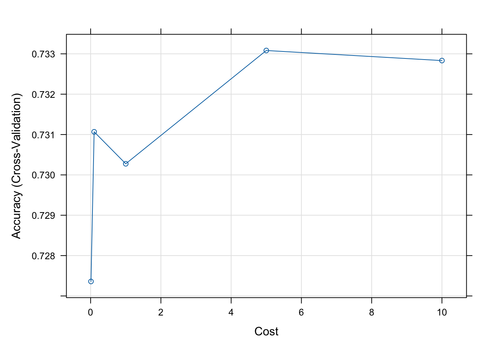
probs_lin <- predict(svm.linear, newdata = TestC, type = "prob")
pred_rocr_svm_L <- prediction(probs_lin[, "X1"], TestC$Heart_Disease_Risk)
perf_svm_L <- performance(pred_rocr_svm_L, "tpr", "fpr")4. Comparaison des modèles — Courbes ROC
get_auc <- function(p) round(as.numeric(performance(p, "auc")@y.values), 3)
auc_vals <- c(
Logit = get_auc(pred_rocr_logit),
BIC = get_auc(pred_rocr_bic),
Lasso = get_auc(pred_rocr_lasso),
CART = get_auc(pred_rocr_tree),
CART_CV = get_auc(pred_rocr_tree_C),
RF = get_auc(pred_rocr_rf_C),
SVM_RBF = get_auc(pred_rocr_svm),
SVM_Lin = get_auc(pred_rocr_svm_L)
)
colors <- c("blue","orange","green3","purple","red","brown","cyan","darkgrey")
plot(perflogit, col = colors[1], lwd = 1.5,
main = "Comparaison des modèles (ROC — Classification)",
xlab = "Taux de Faux Positifs", ylab = "Taux de Vrais Positifs")
abline(a = 0, b = 1, col = "lightgrey", lty = 3)
plot(perfBIC, col = colors[2], lwd = 1.5, add = TRUE)
plot(perfLasso, col = colors[3], lwd = 1.5, add = TRUE)
plot(perfTree, col = colors[4], lwd = 1.5, add = TRUE)
plot(perfTree_C, col = colors[5], lwd = 1.5, add = TRUE)
plot(perfRF_C, col = colors[6], lwd = 2, add = TRUE)
plot(perfSVM, col = colors[7], lwd = 2, add = TRUE)
plot(perf_svm_L, col = colors[8], lwd = 2, add = TRUE)
legend("bottomright", bty = "n", cex = 0.7,
col = colors, lwd = c(1.5,1.5,1.5,1.5,1.5,2,2,2),
legend = paste(names(auc_vals), "— AUC:", auc_vals))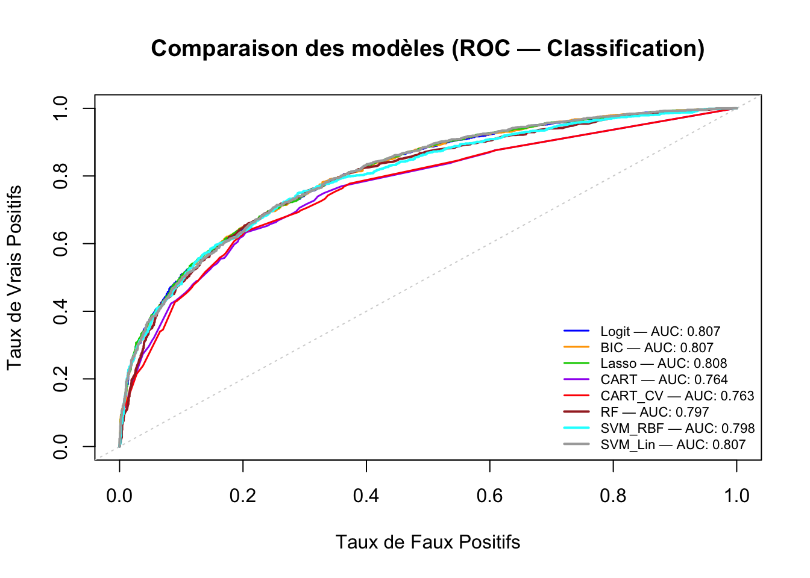
# Sans SVM : les arbres sont les moins bons, le reste est équivalentPARTIE 2 — Régression : Prédiction du Cholestérol LDL
Objectif : prédire
Cholesterol_LDL(variable continue) → problème de régression. Métriques : RMSE, MAE, R².
# On repart du dataset brut en excluant Heart_Disease_Risk
data_reg <- data_raw[, !colnames(data_raw) %in% "Heart_Disease_Risk"]
quanti_cols_expl <- c("Age", "LogHeight_cm", "LogWeight_kg", "LogBMI",
"Systolic_BP", "Diastolic_BP",
"Cholesterol_Total", "Cholesterol_HDL",
"Fasting_Blood_Sugar")
cible <- "Cholesterol_LDL"5. Analyse Exploratoire — Régression
5.1 Distribution de la variable cible
ggplot(data_reg, aes(x = Cholesterol_LDL)) +
geom_histogram(aes(y = after_stat(density)), bins = 30,
fill = "steelblue", color = "white", alpha = 0.8) +
geom_density(color = "darkblue", linewidth = 1) +
labs(title = "Distribution de Cholesterol_LDL",
x = "Cholesterol_LDL (mg/dL)", y = "Densité") + theme_minimal()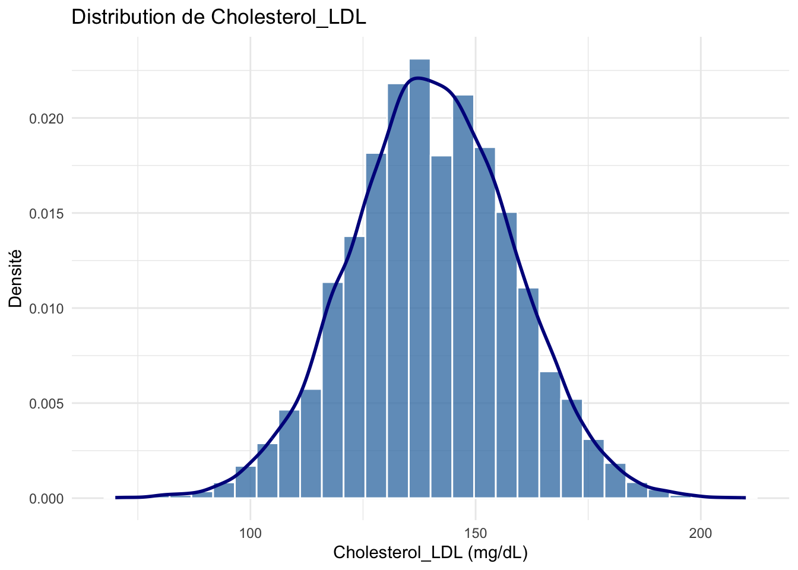
summary(data_reg$Cholesterol_LDL) Min. 1st Qu. Median Mean 3rd Qu. Max.
70.0 128.0 140.0 140.4 152.0 210.0 qqnorm(data_reg$Cholesterol_LDL, main = "QQ-plot — Cholesterol_LDL")
qqline(data_reg$Cholesterol_LDL, col = "red")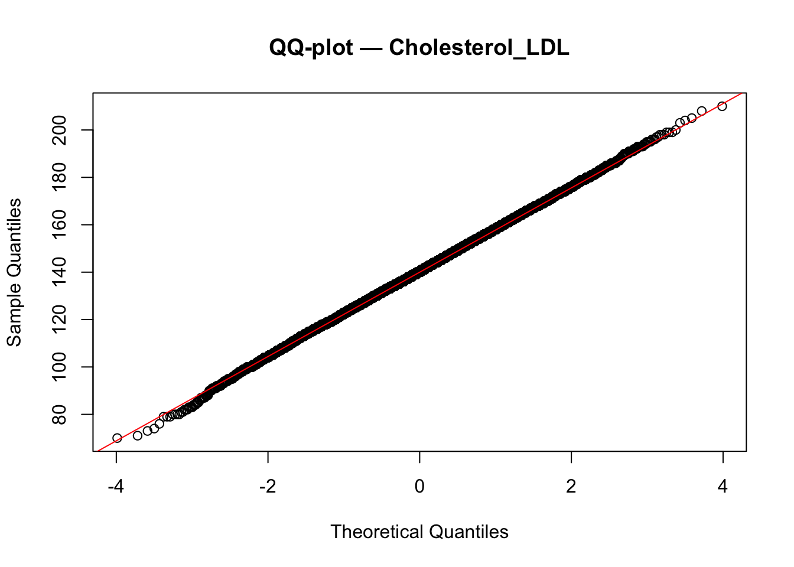
# Pas mal le QQ-plot5.2 Analyse bidimensionnelle
Évidemment lié au cholestérol total. Légère corrélation visuelle avec l’âge.
data_long_q <- data_reg %>%
select(all_of(c(cible, quanti_cols_expl))) %>%
pivot_longer(cols = all_of(quanti_cols_expl),
names_to = "Variable", values_to = "Valeur")
ggplot(data_long_q, aes(x = Valeur, y = Cholesterol_LDL)) +
geom_point(alpha = 0.3, color = "steelblue", size = 0.8) +
geom_smooth(method = "lm", color = "red", se = TRUE) +
facet_wrap(~ Variable, scales = "free_x", ncol = 3) +
labs(title = "Cholesterol_LDL vs variables quantitatives",
x = "Valeur", y = "Cholesterol_LDL") + theme_minimal()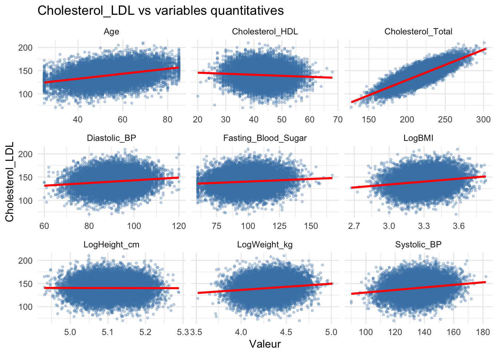
Les variables qualitatives ne semblent pas corrélées avec le LDL.
for (col in quali_cols_base) {
p <- ggplot(data_reg, aes(x = .data[[col]], y = Cholesterol_LDL,
fill = .data[[col]])) +
geom_boxplot(alpha = 0.7, show.legend = FALSE) +
labs(title = paste("Cholesterol_LDL selon", col),
x = col, y = "Cholesterol_LDL (mg/dL)") + theme_minimal()
print(p)
}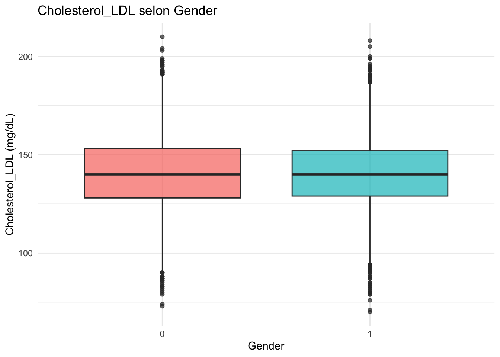
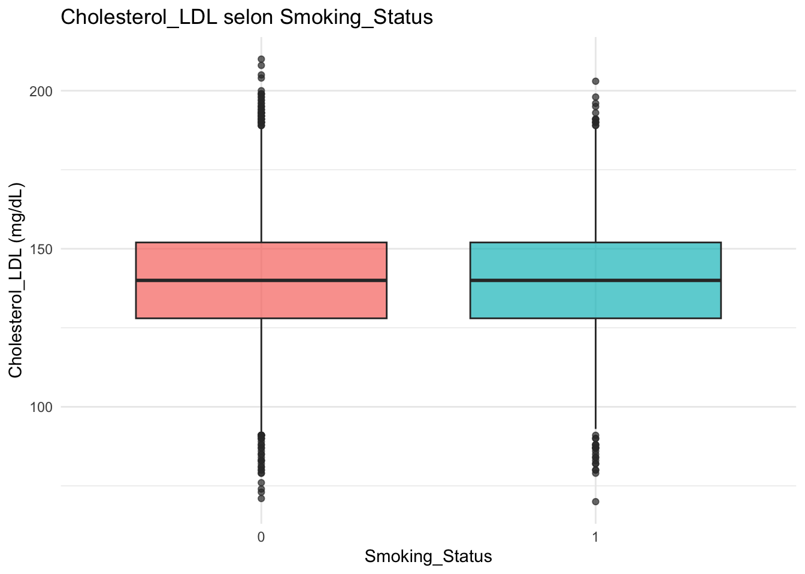
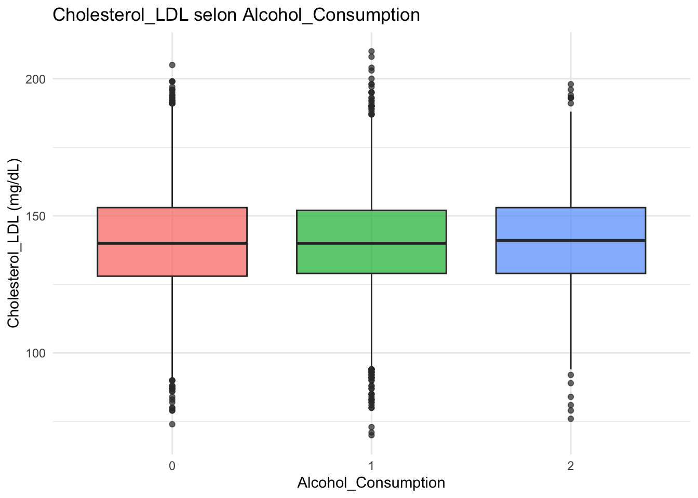
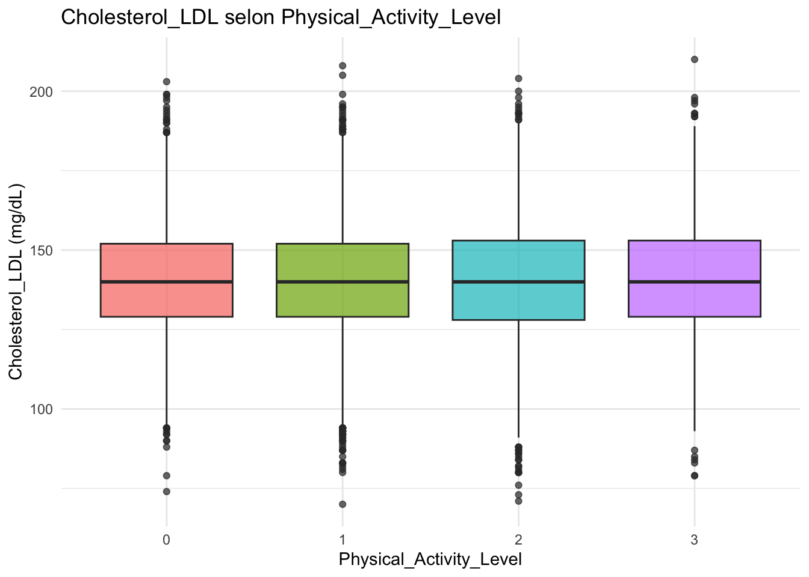
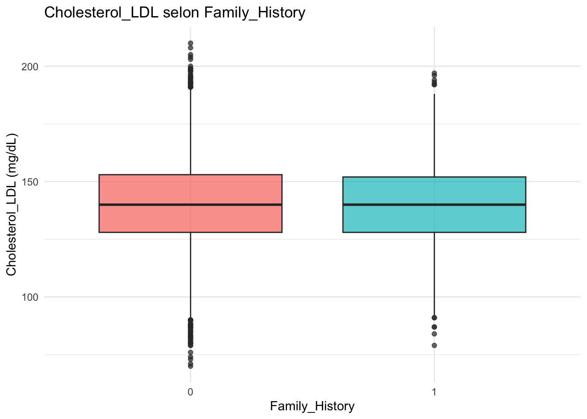
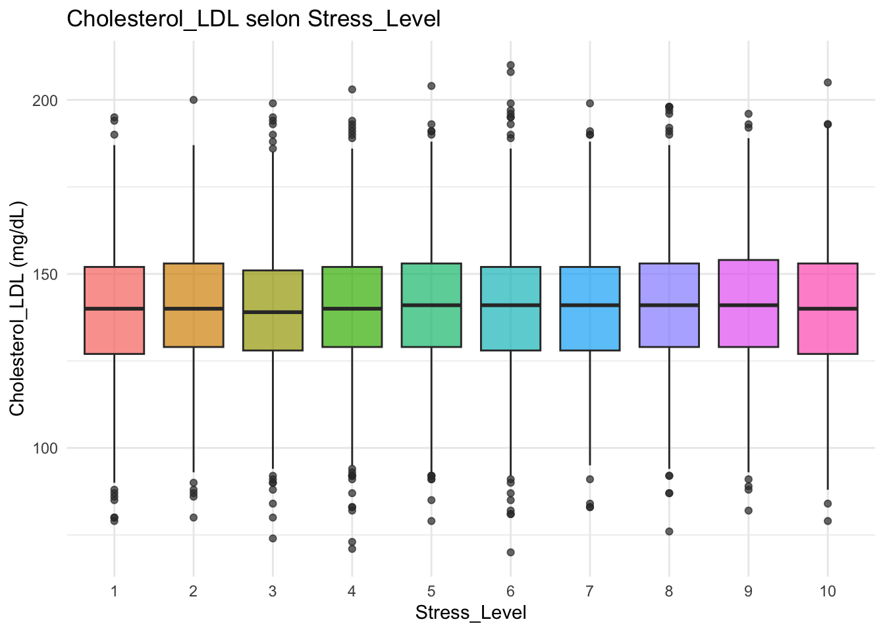
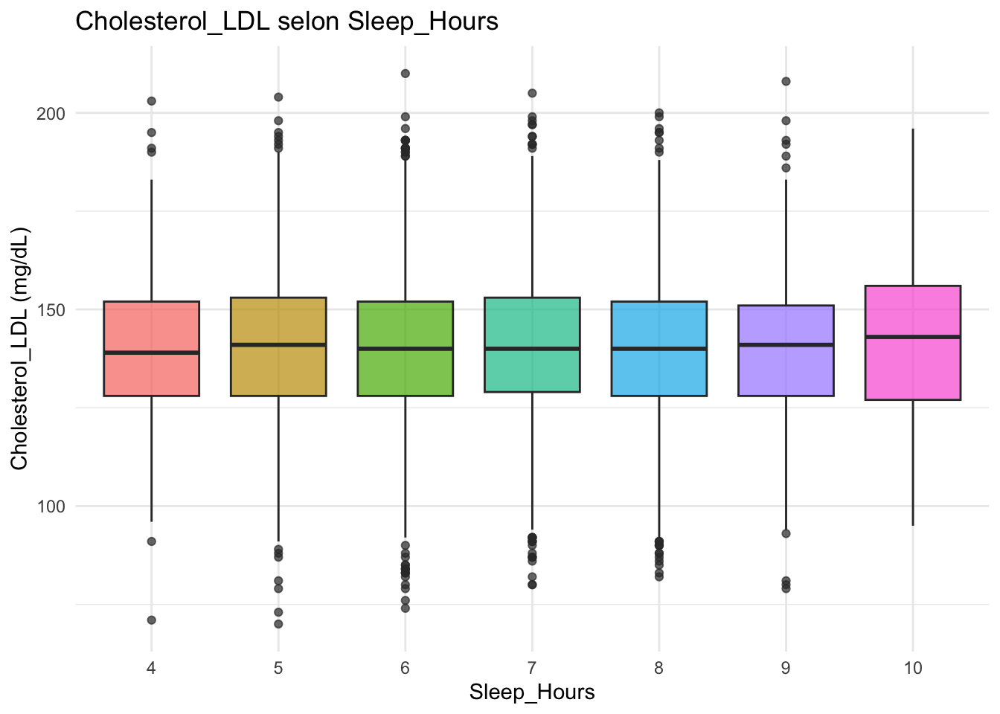
vars_num_reg <- names(data_reg)[sapply(data_reg, is.numeric)]
cor_mat <- cor(data_reg[, vars_num_reg], use = "complete.obs")
corrplot(cor_mat, method = "ellipse", tl.cex = 0.8,
title = "Matrice de corrélations", mar = c(0, 0, 1, 0))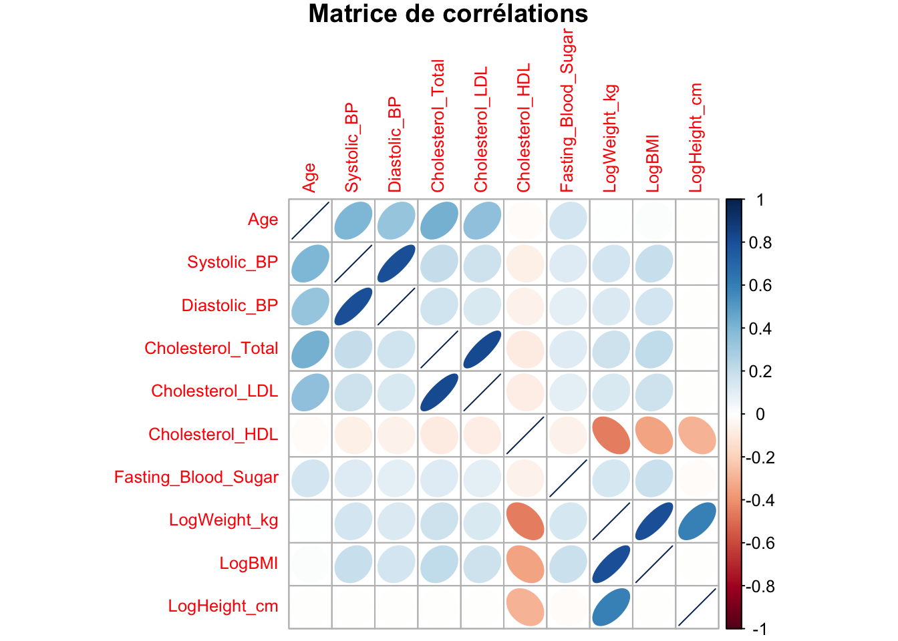
cor_cible <- sort(cor_mat[cible, ], decreasing = TRUE)
cat("\nCorrélations avec Cholesterol_LDL :\n")
Corrélations avec Cholesterol_LDL :print(round(cor_cible, 3)) Cholesterol_LDL Cholesterol_Total Age LogBMI
1.000 0.830 0.357 0.176
Systolic_BP LogWeight_kg Diastolic_BP Fasting_Blood_Sugar
0.173 0.139 0.137 0.095
LogHeight_cm Cholesterol_HDL
-0.004 -0.075 ggpairs(
data_reg[, c(cible, "Age", "Cholesterol_Total", "Cholesterol_HDL",
"Systolic_BP", "Diastolic_BP", "Fasting_Blood_Sugar",
"LogWeight_kg", "LogBMI", "LogHeight_cm")],
mapping = aes(alpha = 0.2, color = data_reg$Gender),
upper = list(continuous = wrap("cor", size = 2.5)),
lower = list(continuous = wrap("points", size = 0.3))
) + theme_minimal()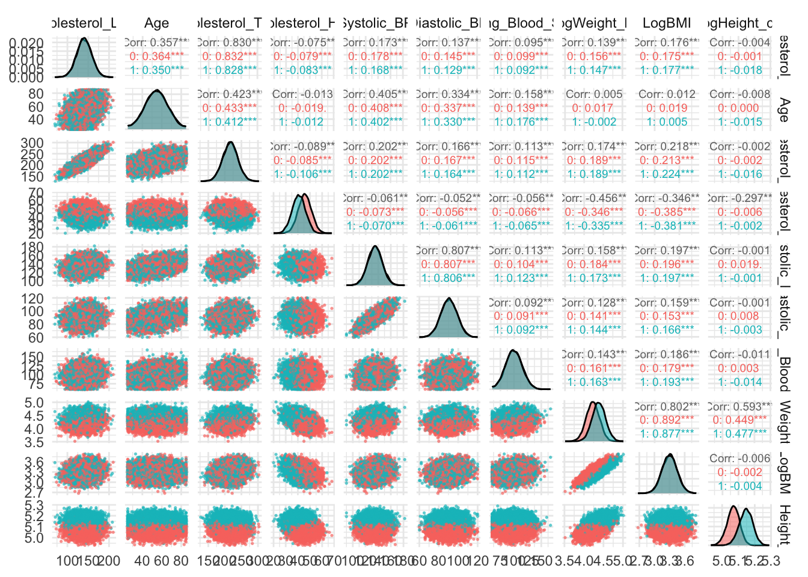
5.3 ACP
quanti_all_reg <- c(quanti_cols_expl, cible)
n_expl <- length(quanti_cols_expl)
acp_reg <- PCA(data_reg[, c(quanti_all_reg, quali_cols_base)],
scale.unit = TRUE, graph = FALSE,
quanti.sup = n_expl + 1,
quali.sup = (n_expl + 2):(n_expl + 1 + length(quali_cols_base)),
ncp = 7)
g1 <- fviz_eig(acp_reg, addlabels = TRUE, ylim = c(0, 50))
g2 <- ggplot(melt(acp_reg$ind$coord), aes(x = Var2, y = value)) +
geom_boxplot() + xlab("")
grid.arrange(g1, g2, ncol = 2)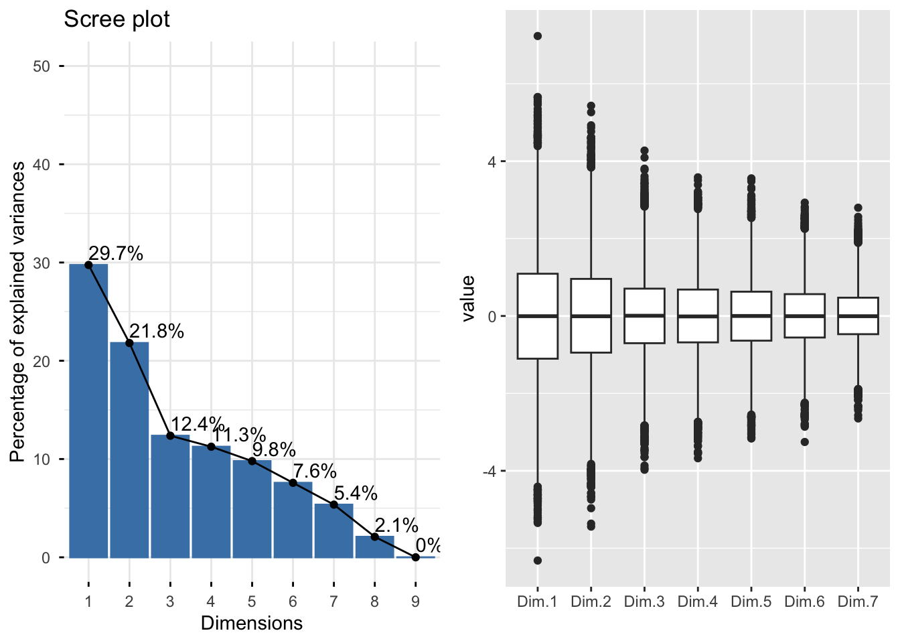
corrplot(acp_reg$var$cor, is.corr = FALSE, method = "ellipse",
title = "Corrélations variables / composantes", mar = c(0, 0, 1, 0))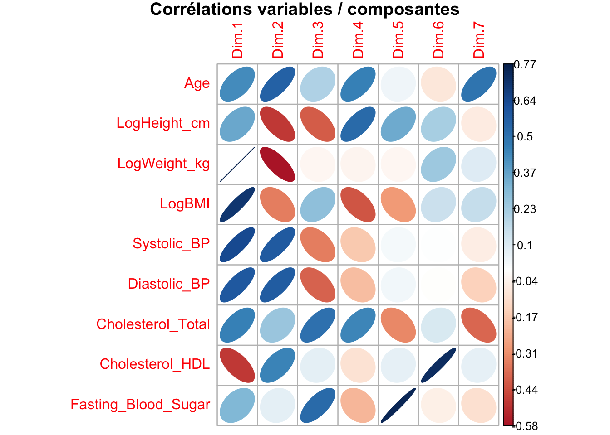
fviz_pca_var(acp_reg, axes = c(1, 2), repel = TRUE,
col.var = "black", col.quanti.sup = "red")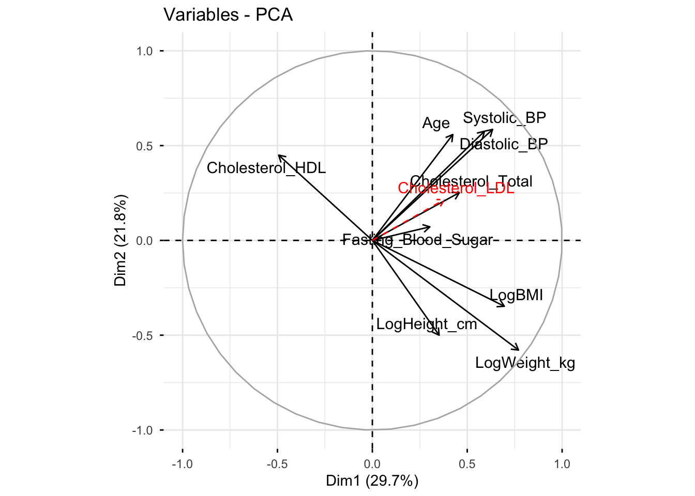
fviz_pca_ind(acp_reg, col.ind = data_reg$Cholesterol_LDL, label = "none",
gradient.cols = c("#2166AC", "#F7F7F7", "#D6604D"),
repel = TRUE, legend.title = "LDL") +
labs(title = "Individus colorés par Cholesterol_LDL (axes 1-2)")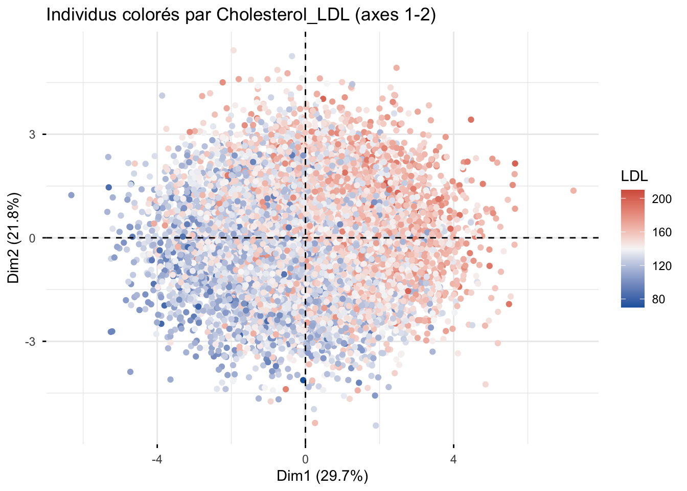
6. Modélisation — Régression
6.1 Partition et prétraitement
set.seed(42)
trainIndex_R <- createDataPartition(data_reg[[cible]], times = 1, p = 0.8, list = FALSE)
trainData_R <- data_reg[ trainIndex_R, ]
testData_R <- data_reg[-trainIndex_R, ]
params_R <- preProcess(trainData_R, method = c("center", "scale"))
TrainR <- predict(params_R, trainData_R)[, -1]
TestR <- predict(params_R, testData_R)[, -1]
y.test_R <- TestR$Cholesterol_LDL
cat("Train:", nrow(TrainR), "| Test:", nrow(TestR), "\n")Train: 12002 | Test: 2998 summary(TrainR[, c(cible, quanti_cols_expl)]) Cholesterol_LDL Age LogHeight_cm LogWeight_kg
Min. :-3.95005 Min. :-2.49545 Min. :-3.15314 Min. :-4.231075
1st Qu.:-0.69460 1st Qu.:-0.72201 1st Qu.:-0.73008 1st Qu.:-0.686315
Median :-0.02106 Median : 0.03804 Median :-0.04079 Median :-0.003728
Mean : 0.00000 Mean : 0.00000 Mean : 0.00000 Mean : 0.000000
3rd Qu.: 0.65248 3rd Qu.: 0.62919 3rd Qu.: 0.73829 3rd Qu.: 0.685943
Max. : 3.79568 Max. : 2.57153 Max. : 3.27619 Max. : 3.811089
LogBMI Systolic_BP Diastolic_BP Cholesterol_Total
Min. :-4.17262 Min. :-4.008173 Min. :-3.61817 Min. :-3.7317
1st Qu.:-0.68078 1st Qu.:-0.720107 1st Qu.:-0.65792 1st Qu.:-0.6766
Median :-0.00934 Median :-0.009174 Median : 0.05255 Median : 0.0318
Mean : 0.00000 Mean : 0.000000 Mean : 0.00000 Mean : 0.0000
3rd Qu.: 0.66745 3rd Qu.: 0.701759 3rd Qu.: 0.64460 3rd Qu.: 0.6517
Max. : 3.48400 Max. : 4.167558 Max. : 3.48644 Max. : 3.8395
Cholesterol_HDL Fasting_Blood_Sugar
Min. :-3.93292 Min. :-2.60170
1st Qu.:-0.72551 1st Qu.:-0.70332
Median :-0.05027 Median : 0.01675
Mean : 0.00000 Mean : 0.00000
3rd Qu.: 0.62497 3rd Qu.: 0.67136
Max. : 4.17001 Max. : 4.40265 metriques_reg <- function(obs, pred, modele = "", lm_model = NULL) {
rmse <- sqrt(mean((obs - pred)^2))
mae <- mean(abs(obs - pred))
if (!is.null(lm_model)) {
s <- summary(lm_model)
r2 <- s$r.squared
r2_adj <- s$adj.r.squared
mse <- s$sigma^2
} else {
n <- length(obs)
r2 <- 1 - sum((obs - pred)^2) / sum((obs - mean(obs))^2)
r2_adj <- 1 - ((1 - r2) * (n - 1) / (n - 2))
mse <- mean((obs - pred)^2)
}
cat(sprintf("%-28s RMSE: %.4f | MAE: %.4f | R²: %.4f | R² Adj: %.4f\n",
modele, rmse, mae, r2, r2_adj))
invisible(c(RMSE = rmse, MAE = mae, MSE = mse, R2 = r2, R2_Adj = r2_adj))
}
gplot.res <- function(obs, pred, titre = "") {
ggplot(data.frame(pred = pred, res = obs - pred), aes(x = pred, y = res)) +
geom_point(color = "steelblue", alpha = 0.5) +
geom_hline(yintercept = 0, color = "red") +
labs(title = titre, x = "Valeurs prédites", y = "Résidus") + theme_minimal()
}6.2 Régression linéaire
Modèle complet
lm.full <- lm(Cholesterol_LDL ~ ., data = TrainR)
summary(lm.full)
Call:
lm(formula = Cholesterol_LDL ~ ., data = TrainR)
Residuals:
Min 1Q Median 3Q Max
-2.25119 -0.37971 0.00062 0.37614 2.12818
Coefficients:
Estimate Std. Error t value Pr(>|t|)
(Intercept) -0.007718 0.031432 -0.246 0.8060
Age 0.002359 0.006178 0.382 0.7025
Gender1 0.006970 0.015343 0.454 0.6496
Systolic_BP 0.023062 0.009005 2.561 0.0104 *
Diastolic_BP -0.016016 0.008675 -1.846 0.0649 .
Cholesterol_Total 0.827082 0.005809 142.390 <2e-16 ***
Cholesterol_HDL -0.007400 0.006096 -1.214 0.2248
Fasting_Blood_Sugar -0.002460 0.005277 -0.466 0.6411
Smoking_Status1 0.011871 0.011200 1.060 0.2892
Alcohol_Consumption1 -0.008193 0.010920 -0.750 0.4531
Alcohol_Consumption2 0.004803 0.017413 0.276 0.7827
Physical_Activity_Level1 -0.001835 0.014004 -0.131 0.8957
Physical_Activity_Level2 0.002897 0.014819 0.196 0.8450
Physical_Activity_Level3 -0.002195 0.019766 -0.111 0.9116
Family_History1 -0.015436 0.014432 -1.070 0.2848
Stress_Level2 0.015158 0.023034 0.658 0.5105
Stress_Level3 -0.008659 0.023026 -0.376 0.7069
Stress_Level4 -0.032502 0.022970 -1.415 0.1571
Stress_Level5 0.001715 0.022861 0.075 0.9402
Stress_Level6 -0.019945 0.022903 -0.871 0.3839
Stress_Level7 0.016363 0.022883 0.715 0.4746
Stress_Level8 0.010821 0.022948 0.472 0.6372
Stress_Level9 -0.001487 0.023079 -0.064 0.9486
Stress_Level10 0.018191 0.022711 0.801 0.4232
Sleep_Hours5 0.004131 0.026773 0.154 0.8774
Sleep_Hours6 0.007502 0.025255 0.297 0.7664
Sleep_Hours7 0.008531 0.025232 0.338 0.7353
Sleep_Hours8 0.003435 0.026771 0.128 0.8979
Sleep_Hours9 -0.015559 0.035039 -0.444 0.6570
Sleep_Hours10 0.071669 0.068179 1.051 0.2932
LogWeight_kg -1.176861 0.783190 -1.503 0.1330
LogBMI 0.940043 0.633275 1.484 0.1377
LogHeight_cm 0.701589 0.469543 1.494 0.1352
---
Signif. codes: 0 '***' 0.001 '**' 0.01 '*' 0.05 '.' 0.1 ' ' 1
Residual standard error: 0.5613 on 11969 degrees of freedom
Multiple R-squared: 0.6858, Adjusted R-squared: 0.685
F-statistic: 816.4 on 32 and 11969 DF, p-value: < 2.2e-16par(mfrow = c(2, 2)); plot(lm.full); par(mfrow = c(1, 1))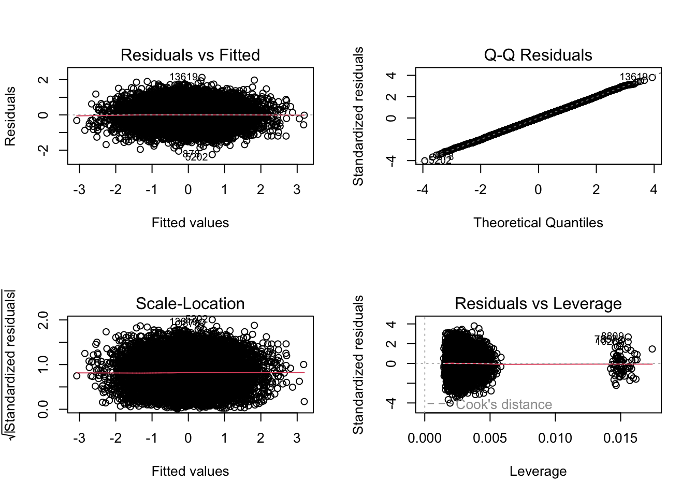
pred.lm <- predict(lm.full, newdata = TestR)
res.lm <- metriques_reg(TestR$Cholesterol_LDL, pred.lm, "LM complet")LM complet RMSE: 0.5624 | MAE: 0.4444 | R²: 0.7002 | R² Adj: 0.7001print(gplot.res(TestR$Cholesterol_LDL, pred.lm, "Résidus — LM complet"))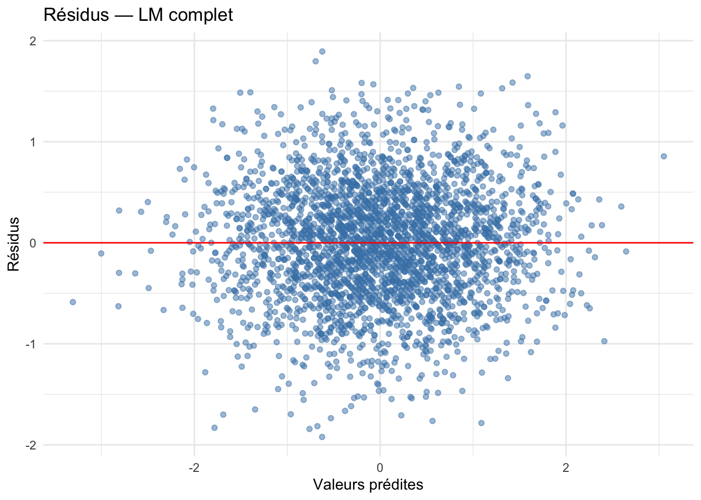
Sélection BIC
Il ne reste plus que le cholestérol total.
n_R <- nrow(TrainR)
lm.bic <- step(lm.full, direction = "backward", k = log(n_R), trace = 0)
summary(lm.bic)
Call:
lm(formula = Cholesterol_LDL ~ Cholesterol_Total, data = TrainR)
Residuals:
Min 1Q Median 3Q Max
-2.24195 -0.38219 -0.00145 0.37520 2.03865
Coefficients:
Estimate Std. Error t value Pr(>|t|)
(Intercept) 8.909e-16 5.123e-03 0.0 1
Cholesterol_Total 8.277e-01 5.123e-03 161.6 <2e-16 ***
---
Signif. codes: 0 '***' 0.001 '**' 0.01 '*' 0.05 '.' 0.1 ' ' 1
Residual standard error: 0.5612 on 12000 degrees of freedom
Multiple R-squared: 0.685, Adjusted R-squared: 0.685
F-statistic: 2.61e+04 on 1 and 12000 DF, p-value: < 2.2e-16pred.lm.bic <- predict(lm.bic, newdata = TestR)
res.lm.bic <- metriques_reg(TestR$Cholesterol_LDL, pred.lm.bic, "LM + BIC")LM + BIC RMSE: 0.5612 | MAE: 0.4432 | R²: 0.7015 | R² Adj: 0.7014print(gplot.res(TestR$Cholesterol_LDL, pred.lm.bic, "Résidus — LM + BIC"))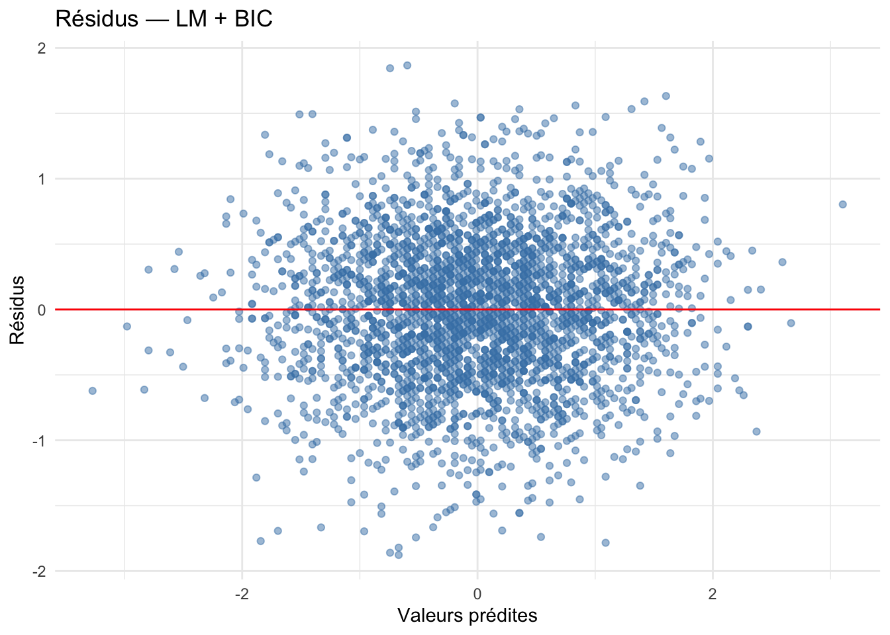
# Résultat très proche du modèle completModèle quadratique
lm.quad <- lm(Cholesterol_LDL ~ . + I(Cholesterol_Total^2) + I(Age^2) +
I(Systolic_BP^2) + I(Diastolic_BP^2) + I(Fasting_Blood_Sugar^2),
data = TrainR)
summary(lm.quad)
Call:
lm(formula = Cholesterol_LDL ~ . + I(Cholesterol_Total^2) + I(Age^2) +
I(Systolic_BP^2) + I(Diastolic_BP^2) + I(Fasting_Blood_Sugar^2),
data = TrainR)
Residuals:
Min 1Q Median 3Q Max
-2.25977 -0.37960 -0.00068 0.37676 2.14441
Coefficients:
Estimate Std. Error t value Pr(>|t|)
(Intercept) 0.0003693 0.0322268 0.011 0.99086
Age 0.0024924 0.0061794 0.403 0.68671
Gender1 0.0072852 0.0153463 0.475 0.63500
Systolic_BP 0.0233203 0.0090073 2.589 0.00964 **
Diastolic_BP -0.0162386 0.0086773 -1.871 0.06132 .
Cholesterol_Total 0.8270776 0.0058095 142.367 < 2e-16 ***
Cholesterol_HDL -0.0074605 0.0060990 -1.223 0.22126
Fasting_Blood_Sugar -0.0024453 0.0052801 -0.463 0.64329
Smoking_Status1 0.0116406 0.0112029 1.039 0.29879
Alcohol_Consumption1 -0.0084545 0.0109239 -0.774 0.43898
Alcohol_Consumption2 0.0045036 0.0174140 0.259 0.79593
Physical_Activity_Level1 -0.0021523 0.0140066 -0.154 0.87788
Physical_Activity_Level2 0.0027881 0.0148240 0.188 0.85082
Physical_Activity_Level3 -0.0025838 0.0197699 -0.131 0.89602
Family_History1 -0.0156751 0.0144352 -1.086 0.27755
Stress_Level2 0.0143601 0.0230400 0.623 0.53312
Stress_Level3 -0.0091168 0.0230296 -0.396 0.69221
Stress_Level4 -0.0330727 0.0229724 -1.440 0.14999
Stress_Level5 0.0016070 0.0228628 0.070 0.94396
Stress_Level6 -0.0201773 0.0229051 -0.881 0.37838
Stress_Level7 0.0158450 0.0228861 0.692 0.48874
Stress_Level8 0.0102767 0.0229533 0.448 0.65436
Stress_Level9 -0.0017148 0.0230850 -0.074 0.94079
Stress_Level10 0.0175712 0.0227158 0.774 0.43923
Sleep_Hours5 0.0051592 0.0267801 0.193 0.84724
Sleep_Hours6 0.0082872 0.0252601 0.328 0.74286
Sleep_Hours7 0.0094801 0.0252389 0.376 0.70721
Sleep_Hours8 0.0038394 0.0267732 0.143 0.88597
Sleep_Hours9 -0.0149555 0.0350448 -0.427 0.66957
Sleep_Hours10 0.0745836 0.0682123 1.093 0.27424
LogWeight_kg -1.1606188 0.7833066 -1.482 0.13845
LogBMI 0.9268937 0.6333679 1.463 0.14337
LogHeight_cm 0.6917937 0.4696113 1.473 0.14075
I(Cholesterol_Total^2) -0.0043435 0.0036529 -1.189 0.23445
I(Age^2) -0.0029393 0.0039521 -0.744 0.45706
I(Systolic_BP^2) -0.0057276 0.0048339 -1.185 0.23609
I(Diastolic_BP^2) 0.0056019 0.0048197 1.162 0.24514
I(Fasting_Blood_Sugar^2) -0.0007700 0.0037288 -0.206 0.83641
---
Signif. codes: 0 '***' 0.001 '**' 0.01 '*' 0.05 '.' 0.1 ' ' 1
Residual standard error: 0.5613 on 11964 degrees of freedom
Multiple R-squared: 0.6859, Adjusted R-squared: 0.6849
F-statistic: 706.1 on 37 and 11964 DF, p-value: < 2.2e-16pred.quad <- predict(lm.quad, newdata = TestR)
res.quad <- metriques_reg(y.test_R, pred.quad, "LM quadratique")LM quadratique RMSE: 0.5627 | MAE: 0.4449 | R²: 0.6999 | R² Adj: 0.6998print(gplot.res(y.test_R, pred.quad, "Résidus — LM quadratique"))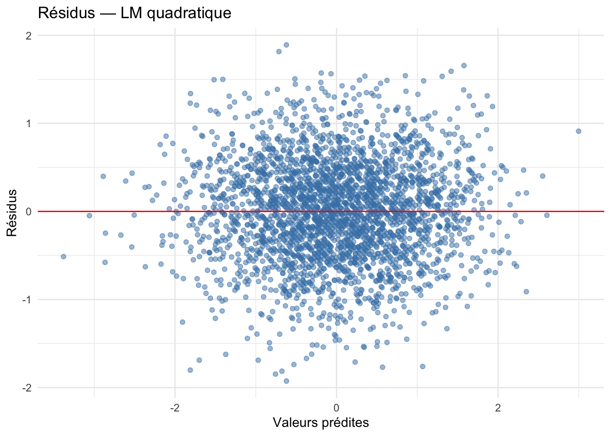
Interactions + BIC
lm.inter <- lm(Cholesterol_LDL ~ (Cholesterol_Total + Age +
Systolic_BP + Cholesterol_HDL)^2,
data = TrainR)
lm.inter.bic <- step(lm.inter, direction = "backward", k = log(n_R), trace = 0)
summary(lm.inter.bic)
Call:
lm(formula = Cholesterol_LDL ~ Cholesterol_Total, data = TrainR)
Residuals:
Min 1Q Median 3Q Max
-2.24195 -0.38219 -0.00145 0.37520 2.03865
Coefficients:
Estimate Std. Error t value Pr(>|t|)
(Intercept) 8.909e-16 5.123e-03 0.0 1
Cholesterol_Total 8.277e-01 5.123e-03 161.6 <2e-16 ***
---
Signif. codes: 0 '***' 0.001 '**' 0.01 '*' 0.05 '.' 0.1 ' ' 1
Residual standard error: 0.5612 on 12000 degrees of freedom
Multiple R-squared: 0.685, Adjusted R-squared: 0.685
F-statistic: 2.61e+04 on 1 and 12000 DF, p-value: < 2.2e-16pred.inter.bic <- predict(lm.inter.bic, newdata = TestR)
res.inter.bic <- metriques_reg(y.test_R, pred.inter.bic, "LM Inter + BIC")LM Inter + BIC RMSE: 0.5612 | MAE: 0.4432 | R²: 0.7015 | R² Adj: 0.7014print(gplot.res(y.test_R, pred.inter.bic, "Résidus — LM Inter + BIC"))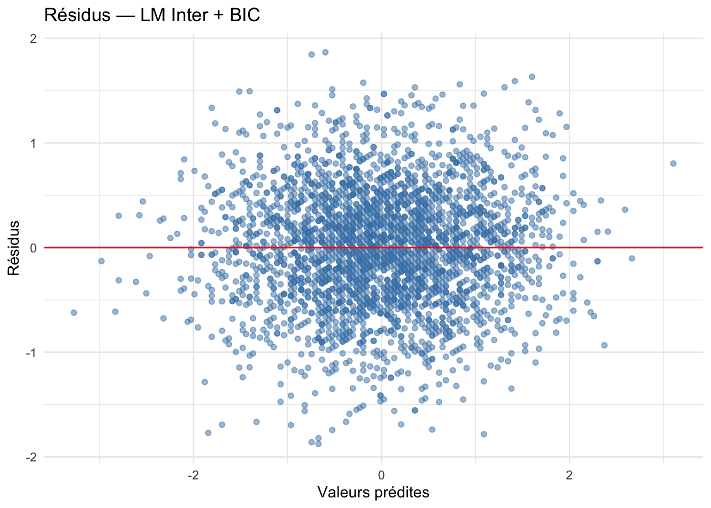
6.3 Ridge et Lasso
x.train_R <- model.matrix(Cholesterol_LDL ~ . - 1, data = TrainR)
y.train_R <- TrainR$Cholesterol_LDL
x.test_R <- model.matrix(Cholesterol_LDL ~ . - 1, data = TestR)Lasso
reg.lasso_R <- glmnet(y = y.train_R, x = x.train_R, family = "gaussian")
reg.lasso_R.cv <- cv.glmnet(y = y.train_R, x = x.train_R,
family = "gaussian", nfolds = 10)
cat("lambda.min :", reg.lasso_R.cv$lambda.min, "\n")lambda.min : 0.008670376 cat("lambda.1se :", reg.lasso_R.cv$lambda.1se, "\n")lambda.1se : 0.05573381 plot(reg.lasso_R, xvar = "lambda", label = TRUE)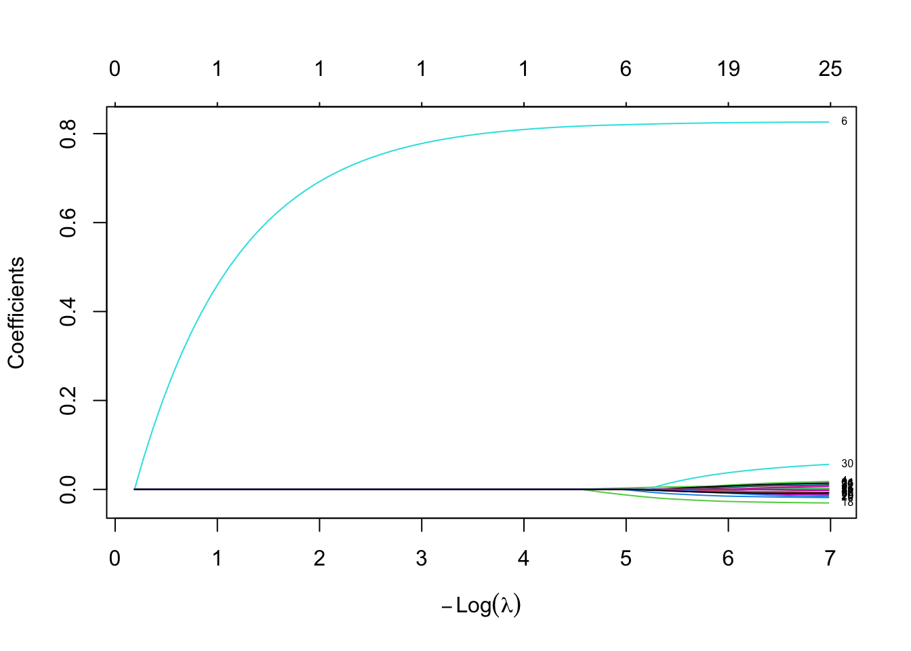
plot(reg.lasso_R.cv)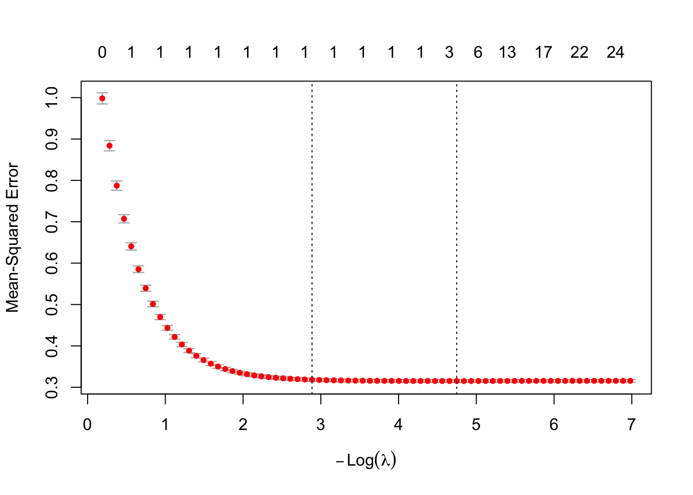
cat("=== Coefficients lambda.1se ===\n")=== Coefficients lambda.1se ===print(coef(reg.lasso_R.cv, s = "lambda.1se"))34 x 1 sparse Matrix of class "dgCMatrix"
lambda.1se
(Intercept) 9.723005e-16
Age .
Gender0 .
Gender1 .
Systolic_BP .
Diastolic_BP .
Cholesterol_Total 7.719277e-01
Cholesterol_HDL .
Fasting_Blood_Sugar .
Smoking_Status1 .
Alcohol_Consumption1 .
Alcohol_Consumption2 .
Physical_Activity_Level1 .
Physical_Activity_Level2 .
Physical_Activity_Level3 .
Family_History1 .
Stress_Level2 .
Stress_Level3 .
Stress_Level4 .
Stress_Level5 .
Stress_Level6 .
Stress_Level7 .
Stress_Level8 .
Stress_Level9 .
Stress_Level10 .
Sleep_Hours5 .
Sleep_Hours6 .
Sleep_Hours7 .
Sleep_Hours8 .
Sleep_Hours9 .
Sleep_Hours10 .
LogWeight_kg .
LogBMI .
LogHeight_cm . pred.lasso.min <- as.vector(predict(reg.lasso_R.cv, newx = x.test_R, s = "lambda.min"))
pred.lasso.1se <- as.vector(predict(reg.lasso_R.cv, newx = x.test_R, s = "lambda.1se"))
res.lasso.min <- metriques_reg(y.test_R, pred.lasso.min, "Lasso lambda.min")Lasso lambda.min RMSE: 0.5615 | MAE: 0.4434 | R²: 0.7012 | R² Adj: 0.7011res.lasso.1se <- metriques_reg(y.test_R, pred.lasso.1se, "Lasso lambda.1se")Lasso lambda.1se RMSE: 0.5654 | MAE: 0.4462 | R²: 0.6970 | R² Adj: 0.6969# Différence minime — on préfère lambda.1se pour la parcimonieRidge
ridge.cv <- cv.glmnet(x = x.train_R, y = y.train_R,
alpha = 0, family = "gaussian", nfolds = 10)
plot(ridge.cv)pred.ridge.min <- as.vector(predict(ridge.cv, newx = x.test_R, s = "lambda.min"))
pred.ridge.1se <- as.vector(predict(ridge.cv, newx = x.test_R, s = "lambda.1se"))
res.ridge.min <- metriques_reg(y.test_R, pred.ridge.min, "Ridge lambda.min")Ridge lambda.min RMSE: 0.5673 | MAE: 0.4476 | R²: 0.6949 | R² Adj: 0.6948res.ridge.1se <- metriques_reg(y.test_R, pred.ridge.1se, "Ridge lambda.1se")Ridge lambda.1se RMSE: 0.5716 | MAE: 0.4507 | R²: 0.6904 | R² Adj: 0.6903print(gplot.res(y.test_R, pred.ridge.min, "Résidus — Ridge lambda.min"))# Même conclusion que Lasso6.4 Arbre CART (régression)
Élagage par Xerror
tree.reg_R <- rpart(Cholesterol_LDL ~ ., data = TrainR,
method = "anova", control = rpart.control(cp = 0.0001))
printcp(tree.reg_R); plotcp(tree.reg_R)
Regression tree:
rpart(formula = Cholesterol_LDL ~ ., data = TrainR, method = "anova",
control = rpart.control(cp = 1e-04))
Variables actually used in tree construction:
[1] Age Alcohol_Consumption Cholesterol_HDL
[4] Cholesterol_Total Diastolic_BP Family_History
[7] Fasting_Blood_Sugar Gender LogBMI
[10] LogHeight_cm LogWeight_kg Physical_Activity_Level
[13] Sleep_Hours Smoking_Status Stress_Level
[16] Systolic_BP
Root node error: 12001/12002 = 0.99992
n= 12002
CP nsplit rel error xerror xstd
1 0.42799327 0 1.00000 1.00017 0.0130457
2 0.09053824 1 0.57201 0.58043 0.0079136
3 0.08388965 2 0.48147 0.47972 0.0065317
4 0.01885338 3 0.39758 0.40467 0.0053181
5 0.01495280 4 0.37873 0.37755 0.0050689
6 0.01451899 5 0.36377 0.36789 0.0049149
7 0.01216542 6 0.34925 0.35787 0.0047346
8 0.00386325 7 0.33709 0.34256 0.0044714
9 0.00313538 8 0.33323 0.33654 0.0043556
10 0.00300144 9 0.33009 0.33347 0.0043145
11 0.00285946 10 0.32709 0.33201 0.0042738
12 0.00245585 11 0.32423 0.32922 0.0042326
13 0.00171232 12 0.32177 0.32709 0.0042043
14 0.00141682 13 0.32006 0.32585 0.0041902
15 0.00098588 14 0.31864 0.32397 0.0041693
16 0.00048577 15 0.31766 0.32336 0.0041656
17 0.00044804 16 0.31717 0.32293 0.0041669
18 0.00041365 17 0.31672 0.32272 0.0041654
19 0.00039586 18 0.31631 0.32299 0.0041676
20 0.00039497 19 0.31591 0.32296 0.0041672
21 0.00037850 20 0.31552 0.32288 0.0041670
22 0.00036547 21 0.31514 0.32319 0.0041743
23 0.00034370 22 0.31478 0.32352 0.0041764
24 0.00034235 23 0.31443 0.32418 0.0041828
25 0.00032115 24 0.31409 0.32469 0.0041857
26 0.00030635 25 0.31377 0.32687 0.0042177
27 0.00030357 26 0.31346 0.32679 0.0042162
28 0.00030285 27 0.31316 0.32708 0.0042235
29 0.00030170 28 0.31286 0.32708 0.0042235
30 0.00030119 29 0.31255 0.32708 0.0042235
31 0.00030118 33 0.31133 0.32725 0.0042253
32 0.00029713 36 0.31043 0.32734 0.0042274
33 0.00028979 37 0.31013 0.32831 0.0042407
34 0.00028936 38 0.30984 0.32911 0.0042633
35 0.00028674 39 0.30955 0.32964 0.0042709
36 0.00027911 41 0.30898 0.33071 0.0042924
37 0.00027707 42 0.30870 0.33223 0.0043204
38 0.00027381 43 0.30842 0.33286 0.0043216
39 0.00027357 44 0.30815 0.33330 0.0043272
40 0.00027156 47 0.30733 0.33342 0.0043293
41 0.00026808 50 0.30651 0.33394 0.0043354
42 0.00025620 52 0.30598 0.33524 0.0043540
43 0.00025481 53 0.30572 0.33702 0.0043814
44 0.00025458 55 0.30521 0.33731 0.0043821
45 0.00025380 57 0.30470 0.33747 0.0043835
46 0.00024497 58 0.30445 0.33804 0.0043920
47 0.00024185 59 0.30420 0.33973 0.0044229
48 0.00023660 65 0.30273 0.34092 0.0044449
49 0.00023621 66 0.30249 0.34198 0.0044441
50 0.00023616 67 0.30225 0.34198 0.0044441
51 0.00023455 68 0.30202 0.34218 0.0044598
52 0.00023181 72 0.30108 0.34324 0.0044721
53 0.00023040 77 0.29992 0.34422 0.0044871
54 0.00022840 79 0.29946 0.34434 0.0044891
55 0.00022819 83 0.29855 0.34531 0.0045012
56 0.00022779 85 0.29809 0.34541 0.0045033
57 0.00022653 86 0.29786 0.34544 0.0045067
58 0.00022625 87 0.29763 0.34603 0.0045164
59 0.00022548 90 0.29696 0.34645 0.0045227
60 0.00022419 91 0.29673 0.34664 0.0045295
61 0.00022378 92 0.29651 0.34723 0.0045441
62 0.00022324 95 0.29582 0.34740 0.0045484
63 0.00022175 96 0.29560 0.34819 0.0045586
64 0.00021868 100 0.29471 0.34936 0.0045682
65 0.00021719 102 0.29428 0.35096 0.0045913
66 0.00021588 103 0.29406 0.35123 0.0045920
67 0.00021512 104 0.29384 0.35267 0.0046095
68 0.00021265 108 0.29298 0.35321 0.0046141
69 0.00021238 109 0.29277 0.35365 0.0046225
70 0.00021162 116 0.29128 0.35433 0.0046314
71 0.00021137 118 0.29086 0.35448 0.0046312
72 0.00021110 119 0.29065 0.35472 0.0046369
73 0.00021091 121 0.29023 0.35506 0.0046394
74 0.00021082 122 0.29002 0.35509 0.0046394
75 0.00020822 124 0.28960 0.35544 0.0046401
76 0.00020754 126 0.28918 0.35618 0.0046458
77 0.00020638 127 0.28897 0.35613 0.0046457
78 0.00020303 128 0.28876 0.35736 0.0046691
79 0.00020182 130 0.28836 0.35932 0.0046915
80 0.00020107 131 0.28816 0.36003 0.0046978
81 0.00019943 132 0.28796 0.36113 0.0047203
82 0.00019931 135 0.28736 0.36187 0.0047249
83 0.00019793 144 0.28556 0.36248 0.0047389
84 0.00019659 145 0.28536 0.36370 0.0047549
85 0.00019596 146 0.28516 0.36413 0.0047586
86 0.00019559 148 0.28477 0.36434 0.0047623
87 0.00019558 150 0.28438 0.36434 0.0047623
88 0.00019365 152 0.28399 0.36452 0.0047673
89 0.00019262 154 0.28360 0.36501 0.0047773
90 0.00019227 156 0.28322 0.36534 0.0047828
91 0.00019210 157 0.28303 0.36560 0.0047837
92 0.00019197 158 0.28283 0.36600 0.0047865
93 0.00019165 162 0.28207 0.36592 0.0047856
94 0.00019141 163 0.28187 0.36618 0.0047896
95 0.00019094 165 0.28149 0.36620 0.0047880
96 0.00019056 166 0.28130 0.36660 0.0047929
97 0.00018768 172 0.28016 0.36897 0.0048247
98 0.00018660 177 0.27922 0.36935 0.0048312
99 0.00018623 178 0.27903 0.36970 0.0048320
100 0.00018611 179 0.27885 0.37009 0.0048361
101 0.00018448 180 0.27866 0.37147 0.0048597
102 0.00018402 191 0.27655 0.37226 0.0048735
103 0.00018343 192 0.27636 0.37241 0.0048723
104 0.00018316 197 0.27543 0.37251 0.0048713
105 0.00018274 199 0.27506 0.37262 0.0048705
106 0.00018209 200 0.27488 0.37314 0.0048727
107 0.00018201 201 0.27470 0.37356 0.0048762
108 0.00018146 202 0.27452 0.37370 0.0048780
109 0.00018102 203 0.27433 0.37403 0.0048844
110 0.00018059 205 0.27397 0.37420 0.0048877
111 0.00018022 208 0.27343 0.37426 0.0048874
112 0.00018019 210 0.27307 0.37442 0.0048882
113 0.00017952 213 0.27253 0.37483 0.0048914
114 0.00017948 215 0.27217 0.37524 0.0049009
115 0.00017908 220 0.27127 0.37536 0.0049015
116 0.00017843 221 0.27109 0.37691 0.0049165
117 0.00017805 222 0.27092 0.37709 0.0049178
118 0.00017798 223 0.27074 0.37726 0.0049217
119 0.00017617 228 0.26985 0.37792 0.0049293
120 0.00017496 234 0.26877 0.37855 0.0049418
121 0.00017412 235 0.26860 0.38008 0.0049693
122 0.00017377 236 0.26843 0.38078 0.0049743
123 0.00017333 239 0.26790 0.38097 0.0049773
124 0.00017148 243 0.26721 0.38171 0.0049874
125 0.00017136 244 0.26704 0.38278 0.0049954
126 0.00017089 249 0.26618 0.38280 0.0049936
127 0.00017081 254 0.26529 0.38279 0.0049953
128 0.00017062 255 0.26512 0.38289 0.0049957
129 0.00017011 256 0.26495 0.38276 0.0049937
130 0.00017003 257 0.26478 0.38281 0.0049910
131 0.00016977 259 0.26444 0.38296 0.0050039
132 0.00016892 260 0.26427 0.38365 0.0050159
133 0.00016802 261 0.26410 0.38410 0.0050177
134 0.00016677 262 0.26394 0.38504 0.0050263
135 0.00016615 264 0.26360 0.38555 0.0050324
136 0.00016592 265 0.26344 0.38586 0.0050452
137 0.00016556 266 0.26327 0.38674 0.0050595
138 0.00016544 268 0.26294 0.38679 0.0050597
139 0.00016543 269 0.26277 0.38679 0.0050597
140 0.00016525 271 0.26244 0.38684 0.0050597
141 0.00016514 273 0.26211 0.38704 0.0050613
142 0.00016513 274 0.26195 0.38723 0.0050622
143 0.00016416 276 0.26162 0.38769 0.0050642
144 0.00016356 277 0.26145 0.38826 0.0050692
145 0.00016337 280 0.26095 0.38856 0.0050690
146 0.00016126 281 0.26079 0.38942 0.0050827
147 0.00016111 282 0.26063 0.38947 0.0050817
148 0.00016073 283 0.26047 0.38944 0.0050799
149 0.00016053 284 0.26031 0.38957 0.0050801
150 0.00016047 285 0.26015 0.38985 0.0050892
151 0.00016013 286 0.25999 0.39007 0.0050919
152 0.00015992 290 0.25935 0.39010 0.0050920
153 0.00015963 292 0.25903 0.39046 0.0050992
154 0.00015916 295 0.25855 0.39078 0.0051003
155 0.00015878 308 0.25643 0.39084 0.0051011
156 0.00015856 309 0.25627 0.39099 0.0051032
157 0.00015811 310 0.25611 0.39103 0.0051042
158 0.00015798 316 0.25514 0.39114 0.0051034
159 0.00015779 321 0.25435 0.39140 0.0051068
160 0.00015741 323 0.25403 0.39174 0.0051096
161 0.00015713 325 0.25372 0.39215 0.0051194
162 0.00015593 326 0.25356 0.39279 0.0051238
163 0.00015548 327 0.25341 0.39341 0.0051339
164 0.00015445 328 0.25325 0.39415 0.0051406
165 0.00015444 329 0.25310 0.39461 0.0051453
166 0.00015443 330 0.25294 0.39461 0.0051450
167 0.00015415 333 0.25248 0.39466 0.0051448
168 0.00015399 335 0.25217 0.39464 0.0051445
169 0.00015350 337 0.25186 0.39527 0.0051528
170 0.00015323 338 0.25171 0.39523 0.0051588
171 0.00015293 341 0.25124 0.39536 0.0051606
172 0.00015253 344 0.25077 0.39560 0.0051626
173 0.00015248 345 0.25062 0.39564 0.0051617
174 0.00015238 347 0.25031 0.39564 0.0051617
175 0.00015236 348 0.25016 0.39582 0.0051636
176 0.00015218 357 0.24870 0.39582 0.0051636
177 0.00015196 358 0.24854 0.39609 0.0051677
178 0.00015006 360 0.24824 0.39719 0.0051840
179 0.00014962 361 0.24809 0.39775 0.0051842
180 0.00014903 363 0.24779 0.39797 0.0051858
181 0.00014858 365 0.24749 0.39822 0.0051877
182 0.00014806 367 0.24720 0.39852 0.0051895
183 0.00014744 368 0.24705 0.39891 0.0051927
184 0.00014734 369 0.24690 0.39917 0.0051964
185 0.00014709 372 0.24646 0.39947 0.0051996
186 0.00014623 373 0.24631 0.39983 0.0052023
187 0.00014588 374 0.24616 0.40053 0.0052128
188 0.00014581 375 0.24602 0.40050 0.0052122
189 0.00014581 376 0.24587 0.40050 0.0052122
190 0.00014539 377 0.24573 0.40061 0.0052137
191 0.00014513 379 0.24544 0.40123 0.0052220
192 0.00014385 381 0.24515 0.40181 0.0052312
193 0.00014341 382 0.24500 0.40268 0.0052495
194 0.00014332 384 0.24472 0.40279 0.0052526
195 0.00014315 387 0.24429 0.40280 0.0052526
196 0.00014302 388 0.24414 0.40296 0.0052545
197 0.00014295 390 0.24386 0.40299 0.0052532
198 0.00014277 391 0.24371 0.40316 0.0052565
199 0.00014266 398 0.24271 0.40337 0.0052583
200 0.00014246 402 0.24213 0.40355 0.0052617
201 0.00014226 403 0.24199 0.40373 0.0052624
202 0.00014220 404 0.24185 0.40395 0.0052661
203 0.00014170 406 0.24157 0.40418 0.0052706
204 0.00014163 407 0.24142 0.40405 0.0052699
205 0.00014093 408 0.24128 0.40399 0.0052667
206 0.00014084 409 0.24114 0.40427 0.0052697
207 0.00014072 410 0.24100 0.40437 0.0052695
208 0.00014071 411 0.24086 0.40437 0.0052695
209 0.00014047 412 0.24072 0.40430 0.0052696
210 0.00014037 413 0.24058 0.40425 0.0052696
211 0.00014032 414 0.24044 0.40433 0.0052709
212 0.00014002 415 0.24030 0.40445 0.0052717
213 0.00013984 417 0.24002 0.40498 0.0052812
214 0.00013969 418 0.23988 0.40513 0.0052911
215 0.00013951 421 0.23946 0.40520 0.0052910
216 0.00013935 422 0.23932 0.40518 0.0052912
217 0.00013932 423 0.23918 0.40525 0.0052924
218 0.00013922 424 0.23904 0.40515 0.0052904
219 0.00013897 427 0.23862 0.40514 0.0052903
220 0.00013872 428 0.23848 0.40528 0.0052905
221 0.00013837 432 0.23787 0.40542 0.0052929
222 0.00013823 442 0.23648 0.40552 0.0052943
223 0.00013807 443 0.23634 0.40577 0.0052974
224 0.00013801 447 0.23579 0.40590 0.0052977
225 0.00013721 448 0.23565 0.40644 0.0053027
226 0.00013721 450 0.23537 0.40746 0.0053096
227 0.00013628 451 0.23524 0.40795 0.0053122
228 0.00013626 452 0.23510 0.40834 0.0053175
229 0.00013610 453 0.23496 0.40854 0.0053206
230 0.00013583 459 0.23413 0.40842 0.0053185
231 0.00013561 463 0.23359 0.40870 0.0053199
232 0.00013559 464 0.23345 0.40874 0.0053216
233 0.00013545 465 0.23332 0.40881 0.0053224
234 0.00013536 466 0.23318 0.40881 0.0053219
235 0.00013535 467 0.23305 0.40888 0.0053231
236 0.00013503 468 0.23291 0.40886 0.0053236
237 0.00013494 469 0.23278 0.40985 0.0053335
238 0.00013487 470 0.23264 0.40985 0.0053335
239 0.00013420 473 0.23224 0.40984 0.0053361
240 0.00013394 474 0.23210 0.41024 0.0053364
241 0.00013358 477 0.23170 0.41018 0.0053342
242 0.00013328 479 0.23143 0.41099 0.0053472
243 0.00013309 480 0.23130 0.41101 0.0053478
244 0.00013295 481 0.23117 0.41117 0.0053483
245 0.00013287 482 0.23103 0.41119 0.0053483
246 0.00013283 486 0.23050 0.41119 0.0053483
247 0.00013255 489 0.23010 0.41145 0.0053497
248 0.00013227 490 0.22997 0.41164 0.0053544
249 0.00013223 492 0.22971 0.41156 0.0053551
250 0.00013221 494 0.22944 0.41160 0.0053550
251 0.00013218 495 0.22931 0.41160 0.0053550
252 0.00013207 496 0.22918 0.41158 0.0053550
253 0.00013188 497 0.22905 0.41191 0.0053575
254 0.00013185 498 0.22892 0.41175 0.0053578
255 0.00013138 499 0.22878 0.41194 0.0053619
256 0.00013136 500 0.22865 0.41226 0.0053636
257 0.00013100 501 0.22852 0.41209 0.0053615
258 0.00013001 502 0.22839 0.41268 0.0053644
259 0.00012931 503 0.22826 0.41337 0.0053746
260 0.00012926 504 0.22813 0.41322 0.0053725
261 0.00012901 507 0.22774 0.41350 0.0053768
262 0.00012877 509 0.22748 0.41368 0.0053793
263 0.00012858 511 0.22723 0.41362 0.0053789
264 0.00012767 512 0.22710 0.41404 0.0053869
265 0.00012765 514 0.22684 0.41457 0.0053934
266 0.00012744 515 0.22672 0.41468 0.0053958
267 0.00012722 518 0.22633 0.41475 0.0053966
268 0.00012656 525 0.22544 0.41521 0.0054019
269 0.00012644 526 0.22531 0.41518 0.0054001
270 0.00012641 527 0.22519 0.41518 0.0054000
271 0.00012618 528 0.22506 0.41529 0.0054012
272 0.00012601 529 0.22493 0.41544 0.0054016
273 0.00012508 530 0.22481 0.41569 0.0054036
274 0.00012502 531 0.22468 0.41586 0.0054077
275 0.00012499 532 0.22456 0.41584 0.0054077
276 0.00012388 534 0.22431 0.41618 0.0054134
277 0.00012355 535 0.22418 0.41685 0.0054153
278 0.00012353 537 0.22394 0.41685 0.0054158
279 0.00012339 538 0.22381 0.41685 0.0054158
280 0.00012339 539 0.22369 0.41693 0.0054167
281 0.00012312 540 0.22357 0.41699 0.0054171
282 0.00012304 542 0.22332 0.41709 0.0054184
283 0.00012184 544 0.22307 0.41738 0.0054204
284 0.00012124 545 0.22295 0.41818 0.0054319
285 0.00012086 550 0.22235 0.41849 0.0054321
286 0.00012072 551 0.22223 0.41857 0.0054345
287 0.00012050 553 0.22198 0.41861 0.0054351
288 0.00012027 556 0.22162 0.41886 0.0054382
289 0.00011990 557 0.22150 0.41905 0.0054387
290 0.00011967 559 0.22126 0.41956 0.0054463
291 0.00011959 560 0.22114 0.41964 0.0054469
292 0.00011941 562 0.22090 0.41971 0.0054490
293 0.00011939 563 0.22078 0.41977 0.0054496
294 0.00011916 564 0.22066 0.41989 0.0054508
295 0.00011891 566 0.22042 0.42018 0.0054504
296 0.00011845 567 0.22030 0.42048 0.0054545
297 0.00011833 568 0.22018 0.42078 0.0054581
298 0.00011829 570 0.21995 0.42089 0.0054580
299 0.00011813 573 0.21958 0.42080 0.0054558
300 0.00011797 574 0.21946 0.42075 0.0054549
301 0.00011796 582 0.21849 0.42075 0.0054549
302 0.00011746 583 0.21837 0.42096 0.0054558
303 0.00011731 585 0.21814 0.42099 0.0054576
304 0.00011720 586 0.21802 0.42121 0.0054663
305 0.00011714 587 0.21790 0.42123 0.0054676
306 0.00011697 589 0.21767 0.42121 0.0054678
307 0.00011689 592 0.21732 0.42116 0.0054674
308 0.00011656 594 0.21708 0.42130 0.0054687
309 0.00011644 595 0.21697 0.42135 0.0054697
310 0.00011641 596 0.21685 0.42145 0.0054728
311 0.00011600 598 0.21662 0.42185 0.0054728
312 0.00011530 600 0.21639 0.42193 0.0054785
313 0.00011509 603 0.21604 0.42203 0.0054837
314 0.00011499 604 0.21593 0.42207 0.0054857
315 0.00011497 605 0.21581 0.42214 0.0054865
316 0.00011469 606 0.21570 0.42216 0.0054873
317 0.00011441 607 0.21558 0.42219 0.0054868
318 0.00011431 608 0.21547 0.42220 0.0054868
319 0.00011417 610 0.21524 0.42243 0.0054950
320 0.00011406 611 0.21512 0.42248 0.0054946
321 0.00011389 612 0.21501 0.42258 0.0054937
322 0.00011378 613 0.21490 0.42274 0.0054989
323 0.00011307 618 0.21433 0.42323 0.0055012
324 0.00011276 620 0.21410 0.42331 0.0055015
325 0.00011230 621 0.21399 0.42395 0.0055052
326 0.00011229 622 0.21388 0.42406 0.0055048
327 0.00011223 625 0.21354 0.42402 0.0055046
328 0.00011214 626 0.21343 0.42399 0.0055041
329 0.00011186 627 0.21331 0.42422 0.0055059
330 0.00011184 628 0.21320 0.42421 0.0055061
331 0.00011165 629 0.21309 0.42424 0.0055061
332 0.00011119 631 0.21287 0.42421 0.0055052
333 0.00011097 632 0.21276 0.42454 0.0055101
334 0.00011074 633 0.21265 0.42464 0.0055110
335 0.00011071 634 0.21253 0.42475 0.0055146
336 0.00011031 635 0.21242 0.42489 0.0055165
337 0.00011027 637 0.21220 0.42509 0.0055185
338 0.00011006 638 0.21209 0.42513 0.0055184
339 0.00010995 639 0.21198 0.42528 0.0055200
340 0.00010982 640 0.21187 0.42514 0.0055182
341 0.00010962 641 0.21176 0.42554 0.0055204
342 0.00010961 642 0.21165 0.42549 0.0055176
343 0.00010938 643 0.21154 0.42558 0.0055211
344 0.00010914 644 0.21143 0.42554 0.0055194
345 0.00010896 645 0.21133 0.42581 0.0055233
346 0.00010895 646 0.21122 0.42596 0.0055241
347 0.00010861 647 0.21111 0.42582 0.0055224
348 0.00010861 649 0.21089 0.42591 0.0055230
349 0.00010853 651 0.21067 0.42595 0.0055233
350 0.00010830 652 0.21056 0.42617 0.0055277
351 0.00010779 655 0.21024 0.42620 0.0055256
352 0.00010750 656 0.21013 0.42632 0.0055282
353 0.00010750 657 0.21002 0.42622 0.0055282
354 0.00010748 658 0.20992 0.42622 0.0055282
355 0.00010741 659 0.20981 0.42624 0.0055285
356 0.00010739 660 0.20970 0.42631 0.0055299
357 0.00010720 661 0.20959 0.42642 0.0055355
358 0.00010717 662 0.20949 0.42658 0.0055368
359 0.00010711 663 0.20938 0.42666 0.0055371
360 0.00010671 664 0.20927 0.42656 0.0055352
361 0.00010627 667 0.20895 0.42709 0.0055404
362 0.00010626 669 0.20874 0.42720 0.0055418
363 0.00010602 672 0.20842 0.42721 0.0055429
364 0.00010583 674 0.20821 0.42715 0.0055423
365 0.00010579 675 0.20810 0.42717 0.0055418
366 0.00010568 677 0.20789 0.42716 0.0055417
367 0.00010496 678 0.20779 0.42748 0.0055432
368 0.00010488 682 0.20737 0.42786 0.0055490
369 0.00010475 683 0.20726 0.42792 0.0055467
370 0.00010449 684 0.20716 0.42783 0.0055469
371 0.00010445 686 0.20695 0.42783 0.0055469
372 0.00010432 689 0.20663 0.42790 0.0055474
373 0.00010426 691 0.20643 0.42789 0.0055475
374 0.00010386 693 0.20622 0.42813 0.0055484
375 0.00010366 694 0.20611 0.42864 0.0055510
376 0.00010352 695 0.20601 0.42869 0.0055507
377 0.00010351 696 0.20591 0.42875 0.0055521
378 0.00010315 698 0.20570 0.42877 0.0055523
379 0.00010302 699 0.20560 0.42887 0.0055544
380 0.00010273 701 0.20539 0.42918 0.0055529
381 0.00010242 702 0.20529 0.42944 0.0055540
382 0.00010241 703 0.20519 0.42952 0.0055566
383 0.00010240 705 0.20498 0.42952 0.0055566
384 0.00010229 706 0.20488 0.42954 0.0055565
385 0.00010222 707 0.20478 0.42953 0.0055565
386 0.00010200 708 0.20467 0.42969 0.0055574
387 0.00010164 710 0.20447 0.43008 0.0055644
388 0.00010150 711 0.20437 0.43018 0.0055653
389 0.00010091 712 0.20427 0.43033 0.0055654
390 0.00010014 713 0.20417 0.43068 0.0055672
391 0.00010000 714 0.20407 0.43117 0.0055736best_cp_R <- tree.reg_R$cptable[which.min(tree.reg_R$cptable[, "xerror"]), "CP"]
tree.pruned_R <- prune(tree.reg_R, cp = best_cp_R)
rpart.plot(tree.pruned_R, main = "CART élagué (xerror)", cex = 0.6)pred.cart_R <- predict(tree.pruned_R, newdata = TestR)
res.cart_R <- metriques_reg(y.test_R, pred.cart_R, "CART (xerror)")CART (xerror) RMSE: 0.5710 | MAE: 0.4504 | R²: 0.6910 | R² Adj: 0.6909print(gplot.res(y.test_R, pred.cart_R, "Résidus — CART (xerror)"))Optimisation par CV (caret)
set.seed(42)
tree.cv_R <- train(Cholesterol_LDL ~ ., data = TrainR,
method = "rpart", metric = "RMSE",
trControl = trainControl(method = "cv", number = 10),
tuneGrid = expand.grid(cp = seq(0.0001, 0.05, by = 0.001)))
plot(tree.cv_R, main = "Sélection du cp (RMSE en CV)")best_cp_cv_R <- tree.cv_R$bestTune$cp
cat("cp optimal (CV) :", best_cp_cv_R, "\n")cp optimal (CV) : 0.0011 tree.pruned_cv_R <- prune(tree.reg_R, cp = best_cp_cv_R)
rpart.plot(tree.pruned_cv_R, main = "CART élagué (CV)", cex = 0.6)pred.cart.cv_R <- predict(tree.pruned_cv_R, newdata = TestR)
res.cart.cv_R <- metriques_reg(y.test_R, pred.cart.cv_R, "CART (CV caret)")CART (CV caret) RMSE: 0.5729 | MAE: 0.4517 | R²: 0.6889 | R² Adj: 0.6888print(gplot.res(y.test_R, pred.cart.cv_R, "Résidus — CART (CV)"))# cp plus élevé = on coupe plus, résultats quand même bons donc autant couperimp_vals_R <- tree.pruned_cv_R$variable.importance
if (!is.null(imp_vals_R)) {
imp_df_R <- data.frame(Variable = names(imp_vals_R),
Importance = as.numeric(imp_vals_R)) %>%
arrange(desc(Importance))
ggplot(imp_df_R, aes(x = reorder(Variable, Importance), y = Importance)) +
geom_col(fill = "steelblue") + coord_flip() +
labs(title = "Importance des variables — CART (régression)",
x = "Variable", y = "Importance") + theme_minimal()
}# Confirme : cholestérol total prépondérant, puis âge dans une moindre mesure6.5 Random Forest (régression)
rf.mod_R <- randomForest(Cholesterol_LDL ~ ., data = TrainR,
ntree = 500, importance = TRUE)
cat("mtry utilisé :", rf.mod_R$mtry, "\n")mtry utilisé : 5 plot(rf.mod_R, main = "Convergence de l'erreur (nombre d'arbres)")importance_rf_R <- as.data.frame(importance(rf.mod_R))
importance_rf_R$Variable <- rownames(importance_rf_R)
ggplot(importance_rf_R, aes(x = reorder(Variable, `%IncMSE`), y = `%IncMSE`)) +
geom_col(fill = "darkgreen") + coord_flip() +
labs(title = "Importance des variables (Random Forest — régression)",
x = "Variable", y = "% augmentation MSE") + theme_minimal()# Le poids remonte un peu, mais le cholestérol total reste dominant
pred.rf_R <- predict(rf.mod_R, newdata = TestR)
res.rf_R <- metriques_reg(y.test_R, pred.rf_R, "Random Forest")Random Forest RMSE: 0.5768 | MAE: 0.4544 | R²: 0.6847 | R² Adj: 0.6846print(gplot.res(y.test_R, pred.rf_R, "Résidus — Random Forest"))6.6 SVR (Support Vector Regression)
Noyau RBF
cl <- makePSOCKcluster(detectCores() - 1)
registerDoParallel(cl)
tuneGrid_radial <- expand.grid(
sigma = c(0.01, 0.05, 0.1, 0.2),
C = c(0.5, 1, 2, 5)
)
svr.caret <- train(
Cholesterol_LDL ~ ., data = TrainR,
method = "svmRadial",
trControl = trainControl(method = "cv", number = 5, allowParallel = TRUE),
tuneGrid = tuneGrid_radial,
preProcess = c("center", "scale")
)
stopCluster(cl); registerDoSEQ()
plot(svr.caret)pred.svr_R <- predict(svr.caret, newdata = TestR)
res.svr_R <- metriques_reg(TestR$Cholesterol_LDL, pred.svr_R, "SVR (RBF)")SVR (RBF) RMSE: 0.5700 | MAE: 0.4483 | R²: 0.6921 | R² Adj: 0.6920print(gplot.res(TestR$Cholesterol_LDL, pred.svr_R, "Résidus — SVR RBF"))Noyau Linéaire
cl <- makePSOCKcluster(detectCores() - 1)
registerDoParallel(cl)
grid <- expand.grid(C = c(0.01, 0.1, 1, 5, 10))
svr.lin <- train(
Cholesterol_LDL ~ ., data = TrainR, method = "svmLinear",
trControl = trainControl(method = "cv", number = 5, allowParallel = TRUE),
tuneGrid = expand.grid(C = c(0.01, 0.1, 1, 5, 10)),
preProcess = c("center", "scale")
)
stopCluster(cl); registerDoSEQ()
print(svr.lin)Support Vector Machines with Linear Kernel
12002 samples
16 predictor
Pre-processing: centered (32), scaled (32)
Resampling: Cross-Validated (5 fold)
Summary of sample sizes: 9602, 9602, 9603, 9601, 9600
Resampling results across tuning parameters:
C RMSE Rsquared MAE
0.01 0.5627746 0.6837057 0.4487412
0.10 0.5627732 0.6836672 0.4487665
1.00 0.5627898 0.6836693 0.4487943
5.00 0.5628106 0.6836494 0.4488387
10.00 0.5628285 0.6836230 0.4488699
RMSE was used to select the optimal model using the smallest value.
The final value used for the model was C = 0.1.pred.svr.lin_R <- predict(svr.lin, newdata = TestR)
res.svr.lin_R <- metriques_reg(TestR$Cholesterol_LDL, pred.svr.lin_R, "SVR (Linéaire)")SVR (Linéaire) RMSE: 0.5627 | MAE: 0.4448 | R²: 0.6998 | R² Adj: 0.6997print(gplot.res(TestR$Cholesterol_LDL, pred.svr.lin_R, "Résidus — SVR Linéaire"))7. Comparaison des modèles — Régression
resultats_reg <- data.frame(
Modèle = c("LM complet", "LM + BIC", "LM quadratique", "LM Inter + BIC",
"Ridge", "Lasso", "CART (xerror)", "CART (CV)",
"Random Forest", "SVR (RBF)", "SVR (Linéaire)"),
RMSE = c(res.lm["RMSE"], res.lm.bic["RMSE"], res.quad["RMSE"],
res.inter.bic["RMSE"], res.ridge.1se["RMSE"], res.lasso.1se["RMSE"],
res.cart_R["RMSE"], res.cart.cv_R["RMSE"], res.rf_R["RMSE"],
res.svr_R["RMSE"], res.svr.lin_R["RMSE"]),
MAE = c(res.lm["MAE"], res.lm.bic["MAE"], res.quad["MAE"],
res.inter.bic["MAE"], res.ridge.1se["MAE"], res.lasso.1se["MAE"],
res.cart_R["MAE"], res.cart.cv_R["MAE"], res.rf_R["MAE"],
res.svr_R["MAE"], res.svr.lin_R["MAE"]),
R2 = c(res.lm["R2"], res.lm.bic["R2"], res.quad["R2"],
res.inter.bic["R2"], res.ridge.1se["R2"], res.lasso.1se["R2"],
res.cart_R["R2"], res.cart.cv_R["R2"], res.rf_R["R2"],
res.svr_R["R2"], res.svr.lin_R["R2"])
) %>% arrange(RMSE)
print(resultats_reg) Modèle RMSE MAE R2
1 LM + BIC 0.5611572 0.4431709 0.7015390
2 LM Inter + BIC 0.5611572 0.4431709 0.7015390
3 LM complet 0.5623828 0.4443728 0.7002338
4 LM quadratique 0.5626884 0.4448802 0.6999079
5 SVR (Linéaire) 0.5627495 0.4448421 0.6998428
6 Lasso 0.5654049 0.4462494 0.6970035
7 SVR (RBF) 0.5699602 0.4483493 0.6921015
8 CART (xerror) 0.5709706 0.4503754 0.6910088
9 Ridge 0.5715682 0.4507122 0.6903617
10 CART (CV) 0.5729076 0.4517127 0.6889088
11 Random Forest 0.5767822 0.4543534 0.6846868resultats_long_reg <- resultats_reg %>%
pivot_longer(cols = c("RMSE", "MAE"), names_to = "Métrique", values_to = "Valeur")
ggplot(resultats_long_reg, aes(x = reorder(Modèle, Valeur), y = Valeur, fill = Métrique)) +
geom_col(position = "dodge", alpha = 0.85) + coord_flip() +
scale_fill_manual(values = c("RMSE" = "steelblue", "MAE" = "tomato")) +
labs(title = "Comparaison des modèles — RMSE et MAE (test)", x = NULL, y = "Erreur") +
theme_minimal()ggplot(resultats_reg, aes(x = reorder(Modèle, R2), y = R2)) +
geom_col(fill = "seagreen", alpha = 0.85) + coord_flip() +
labs(title = "Comparaison des modèles — R² (test)", x = NULL, y = "R²") +
theme_minimal()preds_list_R <- list(
"LM complet" = pred.lm,
"BIC" = pred.lm.bic,
"Lasso" = pred.lasso.1se,
"CART (CV)" = pred.cart.cv_R,
"RF" = pred.rf_R,
"SVR (RBF)" = pred.svr_R,
"SVR (Linear)"=pred.svr.lin_R
)
plots_pvo <- lapply(names(preds_list_R), function(nm) {
p <- preds_list_R[[nm]]
df <- data.frame(obs = y.test_R, pred = p[seq_along(y.test_R)])
ggplot(df, aes(x = obs, y = pred)) +
geom_point(alpha = 0.4, color = "steelblue", size = 0.9) +
geom_abline(slope = 1, intercept = 0, color = "red") +
labs(title = nm, x = "Observé", y = "Prédit") + theme_minimal()
})
do.call(grid.arrange, c(plots_pvo, ncol = 2))